Code
load("data/wt.growth.array.RData")if any changes are made, need to re-run qmd_to_r_script() function at end, in console
Purpose: This script generates the functions called in the IBM simulation loop.
Source dependencies
Load pre-calculated growth
load("data/wt.growth.array.RData")Rescale a vector to a specific range…e.g., [0-1].
# Rescale a vector to a specific
fncRescale <- function(x, to = c(0, 1), from = range(x, na.rm = TRUE, finite = TRUE)) {
(x - from[1]) / diff(from) * diff(to) + to[1]
}Build bioenergetics model, equations from Hanson et al. (1997), and general approach from A. Fullerton (https://github.com/aimeefullerton/growth_regime_IBM). Currently using O. mykiss parameters because the full suite of respiration estimates does not exist for bull trout, and hence no effect of ration.
Get BioEnergetics Parameters
fncGetBioEParms <- function(spp, pred.en.dens, prey.en.dens, oxy, pff, wt.nearest,
startweights = rep(initial.mass, numFish), pvals = rep(0.5, numFish), ration = rep(0.1, numFish)){
N.sites <- nrow(wt.nearest) #here, sites are fish in each reach
N.steps <- 1 #one time step
Species <- spp
SimMethod <- 1 #method that predicts growth
Pred <- pred.en.dens #predator energy density
Oxygen <- oxy #oxygen consumed
PFF <- pff #percent indigestible prey
stab.factor <- 0.5 #stability factor for other simulation methods
epsilon <- 0.5 #also for other simulation methods
endweights <- startweights*5
TotalConsumption <- rep(100, N.sites)
pvalues <- t(matrix(round(pvals, 5)))
sitenames <- t(matrix(wt.nearest[,"pid"]))
temperature <- t(wt.nearest[,"WT"])
prey.energy.density <- t(matrix(rep(prey.en.dens, N.sites)))
ration <- t(matrix(round(ration, 5)))
return(list(
"Species" = Species,
"SimMethod" = SimMethod,
"Wstart" = startweights,
"Endweights" = endweights,
"TotalConsumption" = TotalConsumption,
"pp "= pvalues,
"Temps" = temperature,
"N.sites" = N.sites,
"N.steps" = N.steps,
"sitenames" = sitenames,
"Pred" = Pred,
"prey.energy.density" = prey.energy.density,
"Oxygen" = Oxygen,
"stab.factor" = stab.factor,
"PFF" = PFF,
"epsilon" = epsilon,
"ration" = ration)
)
}Constants, hard-coded for O. mykiss. Could alternatively do for bull trout (constants commented out) but we don’t have parameter estimates for respiration equations that would allow growth to vary by ration size.
# Constants, hard-coded - using RATION instead of p-values
fncReadConstants <- function() {
# Get consumption constants
# Cons <- data.frame(
# ConsEQ = 3,
# CA = 0.1317,
# CB = -0.1396,
# CQ = 3.0,
# CTO = 15.8,
# CTM = 17.5,
# CTL = 21.0,
# CK1 = 0.06,
# CK4 = 0.38)
#
# # Get respiration constants
# Resp <- data.frame(
# RespEQ = 1,
# RA = 0.0009,
# RB = -0.1266,
# RQ = 0.0833,
# RTO = 0,
# RTM = 0,
# RTL = 0,
# RK1 = 1,
# RK4 = 0,
# ACT = 1,
# BACT = 0,
# SDA = 0.172)
#
# # Get Excretion / Egestion Constants
# Excr <- data.frame(
# ExcrEQ = 2,
# FA = 0.212,
# FB = -0.222,
# FG = 0.631,
# UA = 0.0314,
# UB = 0.58,
# UG = -0.299)
Cons <- data.frame(
ConsEQ = 4,
CA = 0.628,
CB = -0.3,
CQ = 5,
CTO = 20,
CTM = 20,
CTL = 24,
CK1 = 0.33,
CK4 = 0.2)
# Get respiration constants
Resp <- data.frame(
RespEQ = 1,
RA = 0.00264,
RB = -0.217,
RQ = 0.06818,
RTO = 0.0234,
RTM = 0,
RTL = 25,
RK1 = 1,
RK4 = 0.13,
ACT = 9.7,
BACT = 0.0405,
SDA = 0.172)
# Get Excretion / Egestion Constants
Excr <- data.frame(
ExcrEQ = 4,
FA = 0.212,
FB = -0.222,
FG = 0.631,
UA = 0.0314,
UB = 0.58,
UG = -0.299)
# Return the Constants
return(list("Consumption" = Cons,
"Respiration" = Resp,
"Excretion" = Excr))
}Consumption, respiration, and excretion equations. All calculations are based on specific rates, e.g., consumption in g/g/d
# Consumption Equation 1
ConsumptionEQ1 <- function(W, TEMP, PP, PREY, CA, CB, CQ) {
CMAX <- CA * (W ** CB) #max specific feeding rate (g_prey/g_pred/d)
CONS <<- (CMAX * PP * exp(CQ * TEMP)) #specific consumption rate (g_prey/g_pred/d) - grams prey consumed per gram of predator mass per day
CONSj <<- CONS * PREY #specific consumption rate (J/g_pred/d) - Joules consumed for each gram of predator for each day
return(list("CMAX" = CMAX, "CONS" = CONS, "CONSj" = CONSj))
}
# Consumption Equation 2
ConsumptionEQ2 <- function(W, TEMP, PP, PREY, CA, CB, CTM, CTO, CQ) {
Y <- log(CQ) * (CTM - CTO + 2)
Z <- log(CQ) * (CTM - CTO)
X <- (Z ^ 2 * (1 + (1 + 40 / Y) ^ .5) ^ 2) / 400
V <- (CTM - TEMP) / (CTM - CTO)
CMAX <- CA * (W ** CB)
CONS <- CMAX * PP * (V ** X) * exp(X * (1 - V))
CONSj <- CONS*PREY
return(list("CMAX" = CMAX, "CONS" = CONS, "CONSj" = CONSj))
}
# Consumption Equation 3: Temperature Dependence for cool-cold water species
ConsumptionEQ3 <- function(W, TEMP, PP, PREY, CA, CB, CK1, CTO, CQ, CK4, CTL, CTM) {
G1 <- (1 / (CTO - CQ)) * (log((0.98 * (1 - CK1)) / (CK1 * 0.02)))
L1 <- exp(G1 * (TEMP - CQ))
KA <- (CK1 * L1) / (1 + CK1 * (L1 - 1))
G2 <- (1 / (CTL - CTM)) * (log((0.98 * (1 - CK4)) / (CK4 * 0.02)))
L2 <- exp(G2 * (CTL - TEMP))
KB <- (CK4 * L2) / (1 + CK4 * (L2 - 1))
CMAX <- CA * (W ** CB) #max specific feeding rate (g_prey/g_pred/d)
CONS <- CMAX * PP * KA * KB #specific consumption rate (g_prey/g_pred/d) - grams prey consumed per gram of predator mass per day
CONSj <- CONS * PREY #specific consumption rate (J/g_pred/d) - Joules consumed for each gram of predator for each day
return(list("CMAX" = CMAX, "CONS" = CONS, "CONSj" = CONSj))
}
# Consumption Equation 4: equation 3 but give CONS based on RATION instead of PP
ConsumptionEQ4 <- function(W, TEMP, RATION, PREY, CA, CB, CK1, CTO, CQ, CK4, CTL, CTM) {
G1 <- (1 / (CTO - CQ)) * (log((0.98 * (1 - CK1)) / (CK1 * 0.02)))
L1 <- exp(G1 * (TEMP - CQ))
KA <- (CK1 * L1) / (1 + CK1 * (L1 - 1))
G2 <- (1 / (CTL - CTM)) * (log((0.98 * (1 - CK4)) / (CK4 * 0.02)))
L2 <- exp(G2 * (CTL - TEMP))
KB <- (CK4 * L2) / (1 + CK4 * (L2 - 1))
CMAX <- CA * (W ** CB) #max specific feeding rate (g_prey/g_pred/d)
RATION[RATION >= CMAX] <- CMAX[RATION >= CMAX]
CONS <- RATION * KA * KB #specific consumption rate (g_prey/g_pred/d) - grams prey consumed per gram of predator mass per day
CONSj <- CONS * PREY #specific consumption rate (J/g_pred/d) - Joules consumed for each gram of predator for each day
return(list("CMAX" = CMAX, "CONS" = CONS, "CONSj" = CONSj))
}
# Excretion Equation 1
ExcretionEQ1 <- function(CONS, CONSj, TEMP, PP, FA, UA) {
EG <- FA * CONS # egestion (fecal waste) in g_waste/g_pred/d
U <- UA * (CONS - EG) # excretion (nitrogenous waste) in g_waste/g_pred/d
EGj <- FA * CONSj # egestion in J/g/d
Uj <- UA * (CONSj - EGj) # excretion in J/g/d
return(list("EG" = EG, "EGj" = EGj, "U" = U, "Uj" = Uj))
}
# Excretion Equation 2
ExcretionEQ2 <- function(CONS, CONSj, TEMP, PP, FA, UA, FB, FG, UB, UG) {
EG <- FA * TEMP ^ FB * exp(FG * PP) * CONS # egestion (fecal waste) in g_waste/g_pred/d
U <- UA * TEMP ^ UB * exp(UG * PP) * (CONS - EG) # excretion (nitrogenous waste) in g_waste/g_pred/d
EGj <- EG * CONSj / CONS # egestion in J/g/d
Uj <- U * CONSj / CONS # excretion in J/g/d
return(list("EG" = EG, "EGj" = EGj, "U" = U, "Uj" = Uj))
}
# Excretion Equation 3 (W/ correction for indigestible prey as per Stewart 1983)
ExcretionEQ3 <- function(CONS, CONSj, TEMP, PP, FA, UA, FB, FG, UB, UG, PFF) {
#Note: In R, "F" means "FALSE", here we use EG as the variable name for egestion instead of F (as in the FishBioE 3.0 manual)
#Note: PFF = 0 assumes prey are entirely digestible, making this essentially the same as Equation 2
PE <- FA * (TEMP ** FB) * exp(FG * PP)
PF <- ((PE - 0.1) / 0.9) * (1 - PFF) + PFF
EG <- PF * CONS # egestion (fecal waste) in g_waste/g_pred/d
U <- UA * (TEMP ** UB) * (exp(UG * PP)) * (CONS - EG) # excretion (nitrogenous waste) in g_waste/g_pred/d
EGj <- PF * CONSj # egestion in J/g/d
Uj <- UA * (TEMP ** UB) * (exp(UG * PP)) * (CONSj - EGj) # excretion in J/g/d
return(list("EG" = EG, "EGj" = EGj, "U" = U, "Uj" = Uj))
}
# Excretion Equation 3 but using RATION instead of PP
ExcretionEQ4 <- function(CONS, CONSj, TEMP, RATION, CMAX, FA, UA, FB, FG, UB, UG, PFF) {
#Note: In R, "F" means "FALSE", here we use EG as the variable name for egestion instead of F (as in the FishBioE 3.0 manual)
#Note: PFF = 0 assumes prey are entirely digestible, making this essentially the same as Equation 2
RATION[RATION >= CMAX] <- CMAX[RATION >= CMAX]
PP <- RATION / CMAX #calculating p-value based on ration and CMax inputs
PE <- FA * (TEMP ** FB) * exp(FG * PP)
PF <- ((PE - 0.1) / 0.9) * (1 - PFF) + PFF
EG <- PF * CONS # egestion (fecal waste) in g_waste/g_pred/d
U <- UA * (TEMP ** UB) * (exp(UG * PP)) * (CONS - EG) # excretion (nitrogenous waste) in g_waste/g_pred/d
EGj <- PF * CONSj # egestion in J/g/d
Uj <- UA * (TEMP ** UB) * (exp(UG * PP)) * (CONSj - EGj) # excretion in J/g/d
return(list("EG" = EG, "EGj" = EGj, "U" = U, "Uj" = Uj))
}
# Respiration Equation 1
RespirationEQ1 <- function(W, TEMP, CONS, EG, PREY, OXYGEN, RA, RB, ACT, SDA, RQ, RTO, RK1, RK4, RTL, BACT){
VEL <- (RK1 * W ^ RK4) * (TEMP > RTL) + ACT * W ^ RK4 * exp(BACT * TEMP) * (1 - 1 * (TEMP > RTL))
ACTIVITY <- exp(RTO * VEL)
S <- SDA * (CONS - EG) # proportion of assimilated energy lost to SDA in g/g/d (SDA is unitless)
Sj <- S * PREY # proportion of assimilated energy lost to SDA in J/g/d - Joules lost to digestion per gram of predator mass per day
R <- RA * (W ** RB) * ACTIVITY * exp(RQ * TEMP) # energy lost to respiration (metabolism) in g/g/d
Rj <- R * OXYGEN # energy lost to respiration (metabolism) in J/g/d - Joules per gram of predator mass per day
return(list("R" = R, "Rj" = Rj, "S" = S, "Sj" = Sj))
}
# Respiration Equation 2 (Temp dependent w/ ACT multiplier)
RespirationEQ2 <- function(W, TEMP, CONS, EG, PREY, OXYGEN, RA, RB, ACT, SDA, RTM, RTO, RQ) {
V <- (RTM - TEMP) / (RTM - RTO)
V[V < 0] <- 0.001 #AHF Added to stop errors when Water temps exceed RTM!
Z <- (log(RQ)) * (RTM - RTO)
Y <- (log(RQ)) * (RTM - RTO + 2)
X <- ((Z ** 2) * (1 + (1 + 40 / Y) ** 0.5) ** 2) / 400
S <- SDA * (CONS - EG) # proportion of assimilated energy lost to SDA in g/g/d (SDA is unitless)
Sj <- S * PREY # proportion of assimilated energy lost to SDA in J/g/d - Joules lost to digestion per gram of predator mass per day
R <- RA * (W ** RB) * ACT * ((V ** X) * (exp(X * (1 - V) ))) # energy lost to respiration (metabolism) in g/g/d
Rj <- R * OXYGEN # energy lost to respiration (metabolism) in J/g/d - Joules per gram of predator mass per day
return(list("R" = R, "Rj" = Rj, "S" = S, "Sj" = Sj))
}Calculate growth from consumption, respiration, and excretion component equations. Return growth in g/g/d and g/d..
CalculateGrowth <- function(Constants, Input) {
pred <- Input$Pred
Oxygen <- Input$Oxygen
# Initialize Fish Weights
W <- array(rep(0, (Input$N.sites * (Input$N.steps + 1))), c(Input$N.steps + 1, Input$N.sites))
W[1,] <- as.numeric(Input$Wstart[1:ncol(W)])
Growth <- array(rep(0, Input$N.sites * Input$N.steps), c(Input$N.steps, Input$N.sites))
Growth_j <- Consumpt <- Consumpt_j <- Consumpt_cmax <- Prop_cmax <- Excret <- Excret_j <- Egest <- Egest_j <- Respirat <- Respirat_j <- S.resp <- Sj.resp <- Gg_WinBioE <- Gg_ELR <- Growth
TotalC <- rep(0, Input$N.sites)
##Start Looping Through Time - for Known Consumption, solving for Weight
t = 1
for (t in 1:(Input$N.steps)) {
### Consumption
if(Constants$Consumption$ConsEQ == 1) {
Cons <- with(Constants$Consumption, ConsumptionEQ1(W[t,], Input$Temps[t,], Input$pp[t,], Input$prey.energy.density[t,], Constants$Consumption$CA, Constants$Consumption$CB, Constants$Consumption$CQ))
} else if(Constants$Consumption$ConsEQ == 2){
Cons <- with(Constants$Consumption, ConsumptionEQ2(W[t,], Input$Temps[t,], Input$pp[t,], Input$prey.energy.density[t,], Constants$Consumption$CA, Constants$Consumption$CB, Constants$Consumption$CTM, Constants$Consumption$CTO, Constants$Consumption$CQ))
} else if(Constants$Consumption$ConsEQ == 3){
Cons <- with(Constants$Consumption, ConsumptionEQ3(W[t,], Input$Temps[t,], Input$pp[t,], Input$prey.energy.density[t,], Constants$Consumption$CA, Constants$Consumption$CB, Constants$Consumption$CK1, Constants$Consumption$CTO, Constants$Consumption$CQ, Constants$Consumption$CK4, Constants$Consumption$CTL, Constants$Consumption$CTM))
} else if(Constants$Consumption$ConsEQ == 4){
Cons <- with(Constants$Consumption, ConsumptionEQ4(W[t,], Input$Temps[t,], Input$ration[t,], Input$prey.energy.density[t,], Constants$Consumption$CA, Constants$Consumption$CB, Constants$Consumption$CK1, Constants$Consumption$CTO, Constants$Consumption$CQ, Constants$Consumption$CK4, Constants$Consumption$CTL, Constants$Consumption$CTM))
}
TotalC <- TotalC + Cons$CONS * W[t,]
# store daily consumption
Consumpt[t,] <- as.numeric(Cons$CONS)
Consumpt_j[t,] <- as.numeric(Cons$CONSj)
Consumpt_cmax[t,] <- as.numeric(Cons$CMAX)
Prop_cmax[t,] <- as.numeric(Cons$CONS) / as.numeric(Cons$CMAX)
### Excretion / Egestion
if(Constants$Excretion$ExcrEQ == 1) {
ExcEgest <- with(Constants$Excretion, ExcretionEQ1(Cons$CONS, Cons$CONSj, Input$Temps[t,], Input$pp[t,], Constants$Excretion$FA, Constants$Excretion$UA))
} else if (Constants$Excretion$ExcrEQ == 2) {
ExcEgest <- with(Constants$Excretion, ExcretionEQ2(Cons$CONS, Cons$CONSj, Input$Temps[t,], Input$pp[t,], Constants$Excretion$FA, Constants$Excretion$UA, Constants$Excretion$FB, Constants$Excretion$FG, Constants$Excretion$UB, Constants$Excretion$UG ))
} else if (Constants$Excretion$ExcrEQ == 3) {
ExcEgest <- with(Constants$Excretion, ExcretionEQ3(Cons$CONS, Cons$CONSj, Input$Temps[t,], Input$pp[t,], Constants$Excretion$FA, Constants$Excretion$UA, Constants$Excretion$FB, Constants$Excretion$FG, Constants$Excretion$UB, Constants$Excretion$UG, Input$PFF) )
} else if (Constants$Excretion$ExcrEQ == 4) {
ExcEgest <- with(Constants$Excretion, ExcretionEQ4(Cons$CONS, Cons$CONSj, Input$Temps[t,], Input$ration[t,], Cons$CMAX, Constants$Excretion$FA, Constants$Excretion$UA, Constants$Excretion$FB, Constants$Excretion$FG, Constants$Excretion$UB, Constants$Excretion$UG, Input$PFF) )
}
# store daily excretion and egestion
Excret[t,] <- as.numeric(ExcEgest$U)
Excret_j[t,] <- as.numeric(ExcEgest$Uj)
Egest[t,] <- as.numeric(ExcEgest$EG)
Egest_j[t,] <- as.numeric(ExcEgest$EGj)
### Respiration
if(Constants$Respiration$RespEQ == 1) {
Resp <- with(Constants$Respiration, RespirationEQ1(W[t,], Input$Temps[t,], Cons$CONS, ExcEgest$EG, Input$prey.energy.density[t,], Input$Oxygen, Constants$Respiration$RA, Constants$Respiration$RB, Constants$Respiration$ACT, Constants$Respiration$SDA, Constants$Respiration$RQ,Constants$Respiration$RTO, Constants$Respiration$RK1, Constants$Respiration$RK4, Constants$Respiration$RTL, Constants$Respiration$BACT))
} else if (Constants$Respiration$RespEQ == 2) {
Resp <- with(Constants$Respiration, RespirationEQ2(W[t,], Input$Temps[t,], Cons$CONS, ExcEgest$EG, Input$prey.energy.density[t,], Input$Oxygen, Constants$Respiration$RA, Constants$Respiration$RB, Constants$Respiration$ACT, Constants$Respiration$SDA, Constants$Respiration$RTM, Constants$Respiration$RTO, Constants$Respiration$RQ))
}
#store daily respiration results
Respirat[t,] <- as.numeric(Resp$R)
Respirat_j[t,] <- as.numeric(Resp$Rj)
S.resp[t,] <- as.numeric(Resp$S)
Sj.resp[t,] <- as.numeric(Resp$Sj)
### Now calculate Growth
# specific growth in J/g/d - Joules allocated to growth for each gram of predator on each day
Gj <- Cons$CONSj - Resp$Rj - ExcEgest$EGj - ExcEgest$Uj - Resp$Sj
# specific growth in g/g/d - grams allocated to growth for each gram of predator on each day
G <- Cons$CONS - Resp$R - ExcEgest$EG - ExcEgest$U - Resp$S
## This original code by Fullerton is a little weird, seemingly inefficient.
## Also the matrix naming scheme is a little wonky:
## - Growth[,]: absolute growth in g/d
## - Growth_j[,]: specific growth in J/g/d
## - Gg_WinBioE[,]: specific growth in g/g/d
# Growth_raw[t,] <- as.numeric(G) # g/g/d
Growth[t,] <- as.numeric(Gj * W[t,]) / pred # g/d
Growth_j[t,] <- as.numeric(Gj) # J/g/d
# growth in g/g/d (DailyWeightIncrement divided by fishWeight)
Gg_WinBioE[t,] <- as.numeric(Growth[t,] / W[t,]) # g/g/d
# I would expect Growth_raw and Gg_WinBioE to be equal, as Gg_WinBioE is simply growth in g/g/d derived from growth in J/g/d. But they are not. Not entirely sure why this is. But like Fullerton's code, the FB4 code also derives growth in g/g/d from J/g/d. FB4 user manual also states that all calculations are done in J/g/d. Perhaps in the "G" equation (line 400), the individual components needs to be adjusted by some factor. Consumption is g_prey/g_pred/day, whereas the other terms are in g_waste/g_pred/day. Perhaps these two units are not directly comparable as I thought...maybe need to be adjust by respective energey densities?
# Calculate absolute weight at time t+1
W[t + 1,] <- W[t,] + Growth[t,]
} # End of cycles through time
# Return Results
return(list(
"TotalC" = TotalC,
"W" = W,
"Growth" = Growth,
"Gg_WinBioE" = Gg_WinBioE,
"Gg_ELR" = Gg_ELR,
"Growth_j" = Growth_j,
# "Growth_raw" = Growth_raw,
"Consumption" = Consumpt,
"Consumption_j" = Consumpt_j,
"Consumption_max" = Consumpt_cmax,
"Pvalue" = Prop_cmax,
"Excretion" = Excret,
"Excretion_j" = Excret_j,
"Egestion" = Egest,
"Egestion_j" = Egest_j,
"Respiration" = Respirat,
"Respiration_j" = Respirat_j,
"S.resp" = S.resp,
"Sj.resp" = Sj.resp
))
}The main bioenergetics function that calls other functions
BioE <- function (Input, Constants) {
# for simulation method = 1 (we have p-vals, and want to solve for weights
if (Input$SimMethod == 1) {
# Method 1: Calculate Growth from p-values and Temperatures
Results <- CalculateGrowth(Constants, Input)
W <- Results$W
Growth <- Results$Growth
} else{
# We don't know p-values, but need to iteratively solve for them
# Method 2 or 3: Calculate P-values from Total Growth or Consumption
# Need to assume p-values are constant with time
# initialize first guess p-values of .5
Input$pp <- array(rep(0.5, Input$N.sites * Input$N.step),
c(Input$N.step, Input$N.sites))
# set error at high value, iterate until it's small
Error <- rep(99, Input$N.sites)
iteration <- 0
### Interate until error is less than .1
while(max(abs(Error)) > Input$epsilon)
{
iteration <- iteration + 1
Results<- CalculateGrowth(Constants, Input)
W <- Results$W
TConsumption<- Results$TotalC
# Find error (depending on which thing on which we're converging), and
# and come up with new estimate for average p-value
if (Input$SimMethod == 2) {
Error <- (W[Input$N.step + 1,] - Input$Endweights)
# Delta is the amount by which we'll change the p-value (prior to
# scaling by the stability factor
Delta <- (Input$Endweights) / (W[Input$N.step + 1,]) *
Input$pp[1,] - Input$pp[1,]
Pnew <- as.vector(Input$p[1,] + Input$stab.factor * Delta)
# Guard against negative p-values
for (i in 1:length(Pnew)) {Pnew[i] = max(0, Pnew[i])}
} else
{
Error <- (TConsumption - Input$TotalConsumption) / Input$TotalConsumption
Delta <- Input$TotalConsumption/TConsumption * Input$p[1,] - Input$p[1,]
Pnew <- as.vector(Input$p[1,] + Input$stab.factor * Delta)
}
# Update for user, show p-values and error, see if we're converging
for (i in 1:Input$N.step) {Input$p[i,] <- as.numeric(Pnew)}
print(paste("Pnew =",Pnew, " Error =", Error))
print(paste("iteration = ", iteration))
} # end of while statement
}
Results$pp = Input$pp
# We're done. Let's return the results!
return(Results)
}Functions to look-up pre-calculated growth, temperature dependence, and allometric Cmax.
Look-up current growth based on actual WT, ration, and weight of fish
# PIDs: vector of fish IDs, or NA for all fish
# fish: data frame with columns pid, weight, ration, patch ("warm" or "cold")
# t: current day of year
fncGrowthFish <- function(PIDs = NA, fish, t) {
# sequences must match the dimensions of the pre-calculated wt.growth array
wt.seq <- seq(0.1, 25, 0.1) # water temperature (250 values)
ra.seq <- seq(0.001, 0.4, 0.001) # ration (400 values)
ma.seq <- seq(0.25, 1500, 0.25) # fish mass (6000 values)
if (any(is.na(PIDs))) {
td <- fish[, c("pid", "weight", "ration", "patch")] # all fish
} else {
td <- fish[fish$pid %in% PIDs, c("pid", "weight", "ration", "patch")] # specific fish
}
td[, "weight"][td[, "weight"] < 1] <- 1 # minimum lookup weight is 1 g
if (nrow(td) > 0) {
n <- nrow(td)
growth <- watemp <- vector(length = n)
for (x in 1:n) {
temp <- get_patchtemp(t, td[x, "patch"]) # temperature at fish's current patch
wt.idx <- which.min(abs(wt.seq - temp)) # nearest water temperature index
ra.idx <- which.min(abs(ra.seq - td[x, "ration"])) # nearest ration index
ma.idx <- which.min(abs(ma.seq - td[x, "weight"])) # nearest mass index
growth[x] <- wt.growth[wt.idx, ra.idx, ma.idx] # growth rate in g/g/d
watemp[x] <- wt.seq[wt.idx]
}
lookup <- data.frame(
pid = td[, "pid"],
weight = td[, "weight"],
ration = td[, "ration"],
patch = td[, "patch"],
WT.actual = sapply(td[, "patch"], function(p) get_patchtemp(t, p)),
WT = watemp,
growth = growth
)
return(lookup)
} else {
message("No fish IDs provided")
return(NA)
}
}Look-up best possible patch for growth based on current temperatures across both habitat patches
# fweight: fish mass in grams
# t: current day of year
# ration_warm, ration_cold: ration sizes available in each patch
fncGrowthPossible <- function(fweight, t, ration_warm, ration_cold) {
# sequences must match the dimensions of the pre-calculated wt.growth array
wt.seq <- seq(0.1, 25, 0.1) # water temperature (250 values)
ra.seq <- seq(0.001, 0.4, 0.001) # ration (400 values)
ma.seq <- seq(0.25, 1500, 0.25) # fish mass (6000 values)
fw <- max(1, min(4500, round(fweight))) # clamp weight to lookup range
ma.idx <- which.min(abs(ma.seq - fw))
patches <- c("warm", "cold")
rations <- c(ration_warm, ration_cold)
growth <- watemp <- vector(length = 2)
for (x in 1:2) {
temp <- get_patchtemp(t, patches[x])
wt.idx <- which.min(abs(wt.seq - temp))
ra.idx <- which.min(abs(ra.seq - rations[x]))
growth[x] <- wt.growth[wt.idx, ra.idx, ma.idx]
watemp[x] <- wt.seq[wt.idx]
}
lookup <- data.frame(
patch = patches,
weight = rep(fweight, 2),
ration = rations,
WT.actual = c(get_patchtemp(t, "warm"), get_patchtemp(t, "cold")),
WT = watemp,
growth = growth
)
best_patch <- patches[which.max(growth)]
return(list(lookup = lookup, best_patch = best_patch))
}Look-up f(T) (temperature scalar applied to consumption) based on temperature alone:
fncTempDepend <- function(temp) {
# get bioenergetics constants
constants <- fncReadConstants()
# Model 3 for cool and coldwater species
G1 <- (1 / (constants$Consumption$CTO - constants$Consumption$CQ)) * (log((0.98 * (1 - constants$Consumption$CK1)) / (constants$Consumption$CK1 * 0.02)))
L1 <- exp(G1 * (temp - constants$Consumption$CQ))
KA <- (constants$Consumption$CK1 * L1) / (1 + constants$Consumption$CK1 * (L1 - 1))
G2 <- (1 / (constants$Consumption$CTL - constants$Consumption$CTM)) * (log((0.98 * (1 - constants$Consumption$CK4)) / (constants$Consumption$CK4 * 0.02)))
L2 <- exp(G2 * (constants$Consumption$CTL - temp))
KB <- (constants$Consumption$CK4 * L2) / (1 + constants$Consumption$CK4 * (L2 - 1))
return(KA * KB)
}Plot temperature function
mytemps <- seq(from = 0.1, to = 25, by = 0.1)
plot(fncTempDepend(temp = mytemps) ~ mytemps, type = "l", ylim = c(0,1), xlab = "Temperature (deg. C)", ylab = "f(T)", main = "Temperature dependence model 3")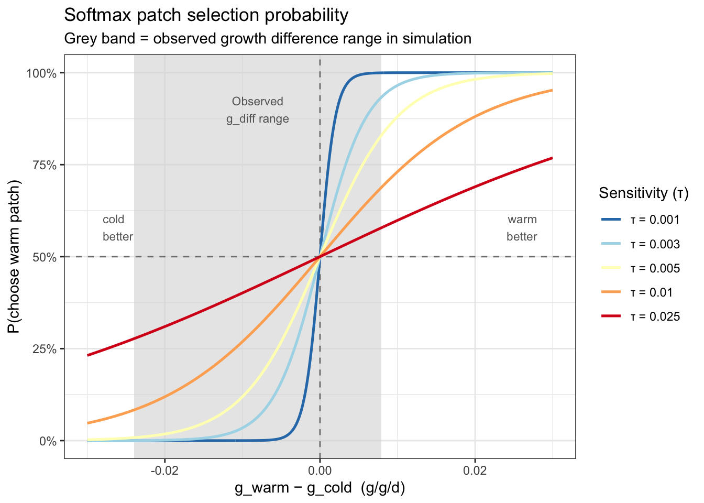
Calculate allometric Cmax based on body size alone
fncAllomCmax <- function(weight) {
# get bioenergetics constants
constants <- fncReadConstants()
# calculate allometric cmax = CA * (mass^CB)
return(constants$Consumption$CA * (weight ^ constants$Consumption$CB))
} Plot Cmax by body size
myweights <- seq(from = 0.5, to = 1000, by = 1)
mycmax <- fncAllomCmax(weight = myweights)
par(mfrow = c(1,2), mar = c(4.5,4.5,1,1))
plot(mycmax ~ myweights, type = 'l', ylab = "Cmax (g/g/d)", xlab = "Fish mass (g)", ylim = c(0, max(mycmax)))
plot(mycmax*myweights ~ myweights, type = 'l', ylab = "Cmax (g/d)", xlab = "Fish mass (g)")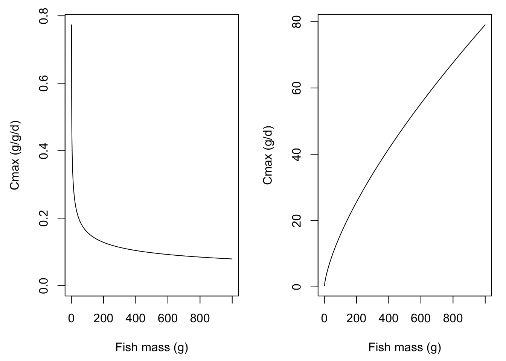
Note that FB4 provides different parameter sets for adult vs. juvenile O. mykiss.
par(mar = c(4.5,4.5,1,1))
# O. mykiss adults: Railsback and Rose 1999
plot(0.628*(myweights^-0.3) ~ myweights, type = 'l', ylab = "Cmax (g/g/d)", xlab = "Fish mass (g)", ylim = c(0, max(mycmax)))
# O. mykiss juveniles: Tyler and Bolduc 2008
lines(0.178*(myweights^-0.297) ~ myweights, type = 'l', lty = 2)
legend("topright", legend = c("Adults (Railsback and Rose 1999)", "Juveniles (Tyler and Bolduc 2008)"),
lty = c(1,2), bty = "n", cex = 0.9, y.intersp = 2)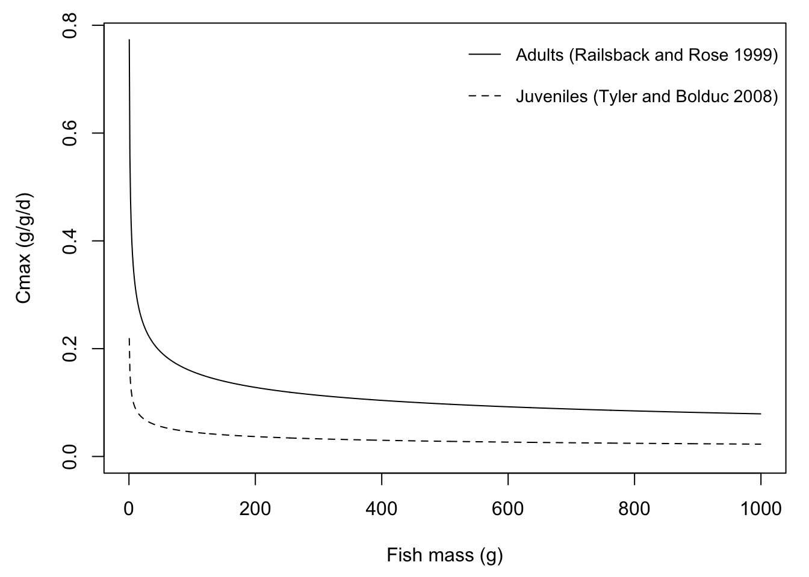
Fish switch habitats/move with a probability that increases with the growth advantage. One parameter controls the strength of the threshold: τ (sensitivity; small = nearly deterministic, large = nearly random).
Write softmax function
fncMoveSoftmax <- function(gwarm, gcold, tau = 0.001) {
exp(gwarm / tau) / (exp(gwarm / tau) + exp(gcold / tau))
}Plot the probability of choosing the warm patch given different values of tau, across a range of between-patch differences in growth potential.
# Softmax: P(warm) = exp(g_warm/tau) / (exp(g_warm/tau) + exp(g_cold/tau))
# Equivalently: sigmoid of (g_warm - g_cold) / tau
tau_vals <- c(0.001, 0.003, 0.005, 0.01, 0.025)
g_diff_seq <- seq(-0.03, 0.03, length.out = 400)
softmax_df <- map_dfr(tau_vals, function(tau) {
tibble(
g_diff = g_diff_seq,
p_warm = 1 / (1 + exp(-g_diff / tau)),
tau_lab = paste0("τ = ", tau)
)
}) |>
mutate(tau_lab = factor(tau_lab, levels = paste0("τ = ", tau_vals)))
# Observed g_diff range from the earlier gdiff_df (pooled across weights)
obs_range <- c(-0.02395578, 0.00791707)
ggplot(softmax_df, aes(x = g_diff, y = p_warm, color = tau_lab)) +
# Shade the observed g_diff range from the simulation
annotate("rect",
xmin = obs_range[1], xmax = obs_range[2],
ymin = -Inf, ymax = Inf,
fill = "grey85", alpha = 0.6) +
annotate("text", x = mean(obs_range), y = 0.9,
label = "Observed\ng_diff range", size = 3, color = "grey40",
hjust = 0.5) +
geom_hline(yintercept = 0.5, linetype = "dashed", color = "grey50") +
geom_vline(xintercept = 0, linetype = "dashed", color = "grey50") +
geom_line(linewidth = 0.9) +
scale_color_brewer(palette = "RdYlBu", direction = -1) +
scale_y_continuous(labels = scales::percent_format(),
breaks = seq(0, 1, 0.25)) +
scale_x_continuous(labels = scales::label_number(accuracy = 0.01)) +
annotate("text", x = 0.028, y = 0.58, label = "warm\nbetter", size = 3,
color = "grey40", hjust = 1) +
annotate("text", x = -0.028, y = 0.58, label = "cold\nbetter", size = 3,
color = "grey40", hjust = 0) +
labs(
x = "g_warm − g_cold (g/g/d)",
y = "P(choose warm patch)",
color = "Sensitivity (τ)",
title = "Softmax patch selection probability",
subtitle = "Grey band = observed growth difference range in simulation"
) +
theme_bw()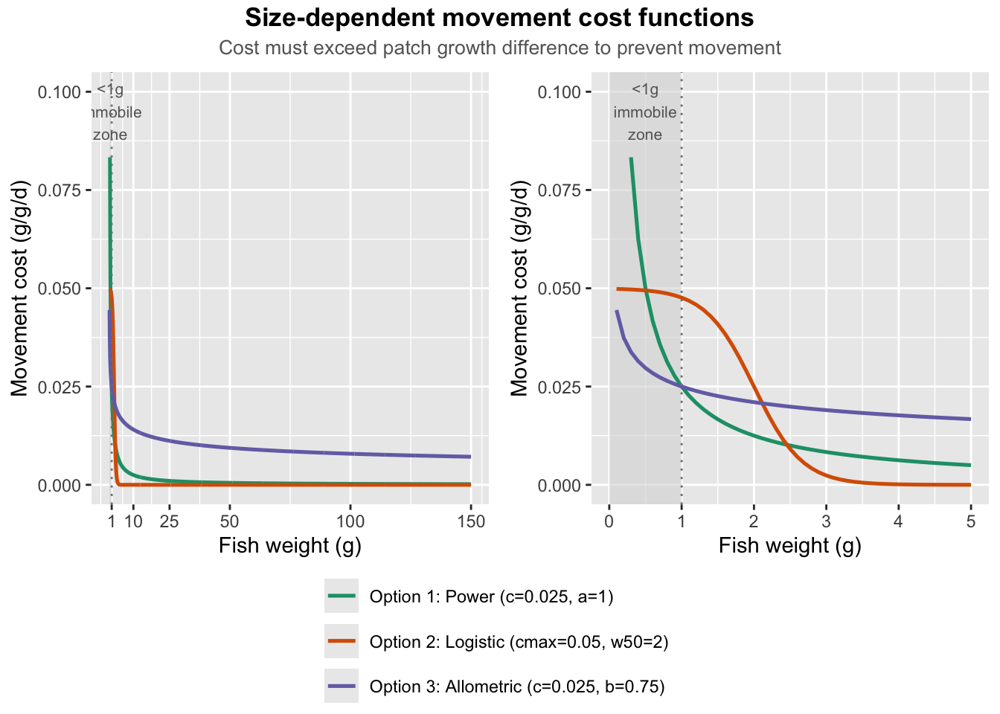
tau = 0.001: Near step-function — almost deterministic. Fish choose the better patch >99% of the time when |g_diff| > ~0.005tau = 0.003: Mostly deterministic at the summer peak (g_diff ≈ −0.025), but probabilistic near the zero-crossing — similar in effect to the perceptual noise approachtau = 0.005: Substantial uncertainty even at moderate growth differencestau = 0.010-0.025: Gradual, shallow curves — even a strong cold-patch advantage (~0.025) only shifts P(warm) to ~25–30%; choices are largely stochastic throughoutFor this simulation (given the range of observed growth differences), τ = 0.001–0.003 is the meaningful range — it preserves the deterministic signal in summer while allowing individual probabilistic variation near the switching crossover. τ much above 0.005 makes the patch signal mostly invisible to the decision rule, i.e., patch selection becomes increasingly random.
viewof tau = Inputs.range([0.0001, 0.01], {
value: 0.005,
step: 0.0001,
label: "Sensitivity (τ)"
})
import { Plot } from "@observablehq/plot"
// Observed g_diff range from simulation (passed from R)
obsMin = -0.02395578
obsMax = 0.00791707
gDiffSeq = Array.from({ length: 400 }, (_, i) => -0.03 + i * (0.06 / 399))
curveData = gDiffSeq.map(g => ({
g_diff: g,
p_warm: 1 / (1 + Math.exp(-g / tau))
}))
Plot.plot({
width: 600,
height: 400,
marginLeft: 60,
x: {
tickFormat: d => d.toFixed(2)
},
y: {
domain: [0, 1],
ticks: [0, 0.25, 0.5, 0.75, 1]
},
marks: [
Plot.axisX({ label: "g_warm − g_cold (g/g/d)", fontSize: 13, tickFormat: d => d.toFixed(2) }),
Plot.axisY({ label: "P(choose warm patch)", fontSize: 13, tickFormat: d => (d * 100).toFixed(0) + "%" }),
// Shaded observed g_diff range
Plot.rectY([{}], {
x1: obsMin, x2: obsMax,
y1: 0, y2: 1,
fill: "#d0d0d0",
opacity: 0.6
}),
Plot.text([{ x: (obsMin + obsMax) / 2, y: 0.9 }], {
x: "x", y: "y",
text: () => "Observed\ng_diff range",
fill: "#888",
fontSize: 11,
textAnchor: "middle"
}),
// Reference lines
Plot.ruleY([0.5], { stroke: "#aaa", strokeDasharray: "4 3" }),
Plot.ruleX([0], { stroke: "#aaa", strokeDasharray: "4 3" }),
// Softmax curve
Plot.line(curveData, {
x: "g_diff",
y: "p_warm",
stroke: "steelblue",
strokeWidth: 2.5
}),
// Annotations
Plot.text([{ x: 0.028, y: 0.58 }], { x: "x", y: "y", text: () => "warm better", fill: "#888", fontSize: 11, textAnchor: "end" }),
Plot.text([{ x: -0.028, y: 0.58 }], { x: "x", y: "y", text: () => "cold better", fill: "#888", fontSize: 11, textAnchor: "start" })
],
title: `Softmax patch selection (τ = ${tau.toFixed(3)})`
})Each fish could have a unique threshold for movement, representing individual variation in boldness/dispersal propensity. This is not a function per se, but just showing how we settled on the choice of parameter value.
Plot the distribution of move_threshold values against the distribution of daily g_move - g_stay values to check that sigma_bold creates meaningful variation rather than all fish behaving identically or randomly.
rations <- seq(0.02, 0.17, 0.001)
waterTemps <- cbind("pid" = seq(1, length(seq(0.1, 25, 0.1))),"WT" = seq(0.1, 25, 0.1))
wt_seq_ibm <- waterTemps[, "WT"] # seq(0.1, 25, 0.1), 250 values
ra_seq_ibm <- rations # seq(0.02, 0.17, 0.001), 151 values
# ── 1. Daily g_move − g_stay across the season ─────────────────────────────────
# Computed at representative masses (start, mid, end-of-season)
rep_weights <- c(10, 50, 150)
gdiff_df <- map_dfr(rep_weights, function(w) {
ma_idx <- pmax(1L, pmin(4500L, round(w)))
map_dfr(seq_len(nrow(habitat_df)), function(d) {
t <- habitat_df$doy[d]
T_warm <- get_patchtemp(t, "warm")
T_cold <- get_patchtemp(t, "cold")
R_warm <- get_patchration(t, "warm")
R_cold <- get_patchration(t, "cold")
wt_idx_warm <- which.min(abs(wt_seq_ibm - T_warm))
wt_idx_cold <- which.min(abs(wt_seq_ibm - T_cold))
ra_idx_warm <- which.min(abs(ra_seq_ibm - R_warm))
ra_idx_cold <- which.min(abs(ra_seq_ibm - R_cold))
g_warm <- wt.growth[wt_idx_warm, ra_idx_warm, ma_idx]
g_cold <- wt.growth[wt_idx_cold, ra_idx_cold, ma_idx]
tibble(date = habitat_df$date[d], g_diff = g_warm - g_cold, weight = w)
})
}) |>
mutate(weight_lab = paste0(weight, " g fish"))
# ── 2. move_threshold distribution for several sigma_bold candidates ────────────
sigma_candidates <- c(0.001, 0.003, 0.005, 0.01)
thresh_df <- map_dfr(sigma_candidates, function(s) {
tibble(
move_threshold = rnorm(5000, mean = 0, sd = s),
sigma_lab = paste0("σ = ", s)
)
}) |>
mutate(sigma_lab = factor(sigma_lab, levels = paste0("σ = ", sigma_candidates)))
# ── 3. Plot ────────────────────────────────────────────────────────────────────
# Panel A: g_diff over time
p_time <- ggplot(gdiff_df, aes(x = date, y = g_diff, color = factor(weight))) +
geom_line(linewidth = 0.8) +
geom_hline(yintercept = 0, linetype = "dashed", color = "grey50") +
scale_color_brewer(palette = "Dark2") +
labs(x = "Date", y = "g_warm − g_cold (g/g/d)",
color = "Fish weight (g)", title = "A: Daily growth advantage of warm over cold patch")
# Panel B: distribution of g_diff vs move_threshold candidates
p_dist <- ggplot() +
# Shaded density of g_diff (pooled across weights — the "signal")
geom_density(data = gdiff_df, aes(x = g_diff, fill = "Patch growth\nadvantage"),
alpha = 0.3, color = NA) +
# move_threshold distributions for each sigma
geom_density(data = thresh_df, aes(x = move_threshold, color = sigma_lab),
linewidth = 0.85) +
geom_vline(xintercept = 0, linetype = "dashed", color = "grey50") +
scale_fill_manual(values = "steelblue") +
scale_color_brewer(palette = "Reds", direction = 1) +
labs(x = "g/g/d", y = "Density",
fill = NULL, color = "Threshold SD (σ)",
title = "B: Threshold distribution vs. actual growth advantage")
cowplot::plot_grid(p_time, p_dist, ncol = 1, rel_heights = c(1, 1.1))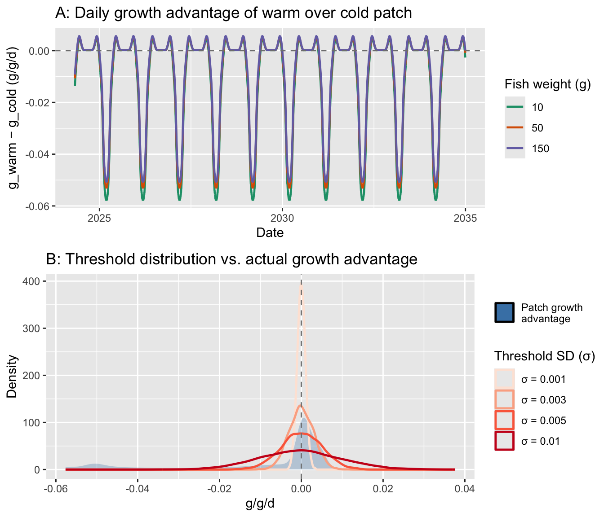
Panel A shows the growth signal movers are responding to: g_warm - g_cold is small and near zero most of the year (~0 to +0.005), with a large negative dip in summer (−0.025) when cold becomes strongly advantageous. Fish weight has minimal effect on the signal.
Panel B shows how the threshold distributions compare to that signal — here’s what it means for behavior:
σ = 0.001: Threshold much narrower than the signal. Most fish behave nearly deterministically — modest individual variation, mainly near the switching crossover in spring/fallσ = 0.003: Threshold width similar to the low-signal periods (winter/shoulder seasons). Good spread of individual responses when the patch advantage is marginal; still mostly consistent in summerσ = 0.005: Threshold wider than the signal for most of the year — choices become largely random outside the summer peakσ = 0.01: Nearly random throughout; boldness is essentially noiseσ = 0.001–0.003 is the defensible range — it creates genuine individual variation in behavior during the biologically interesting transitional periods (when movers are near indifferent between patches), while still letting the signal dominate during the strong summer cold-patch advantage. A reasonable starting point is sigma_bold = 0.002
Create and test functions to impose size-dependent cost of movement.
As in Fullerton model, energetic cost to movement is applied as a percentage of possible growth potential. But this seems pretty crude, and I don’t think this would leads to higher penalties/thresholds for smaller fish…thus, smaller fish are just as likely to be mobile as larger fish.
fncMoveCost <- function(gr = fish$growth) {
return(abs(gr) * move_cost)
}Three other options.
Option 1: Inverse power decay
c = scaling constant; a = decay exponent (higher = steeper drop-off)fncMoveCost_power <- function(w, c = 0.025, a = 1) {
c / w^a
}Option 2: Logistic (sigmoid) transition
c_max (small fish) to ~0 (large fish).w50 = inflection weight (g); k = steepness of transitionw50 sets the mobility threshold, k sets how sharp it isfncMoveCost_logistic <- function(w, c_max = 0.05, k = 3, w50 = 2) {
c_max / (1 + exp(k * (w - w50)))
}Option 3: Allometric metabolic scaling
b = 0.75 is the standard metabolic scaling exponent.c = scaling constant; b = metabolic exponent (default 0.75)fncMoveCost_allometric <- function(w, c = 0.025, b = 0.75) {
c * w^(b - 1) # = c * w^(-0.25): slower decay than Option 1
}Compare functional forms of inverse power decay, logistic transition, and allometric metabolic scaling.
w_seq <- seq(0.1, 150, by = 0.1)
cost_df <- tibble(weight = w_seq) |>
mutate(
`Option 1: Power (c=0.025, a=1)` = fncMoveCost_power(weight),
`Option 2: Logistic (cmax=0.05, w50=2)` = fncMoveCost_logistic(weight),
`Option 3: Allometric (c=0.025, b=0.75)` = fncMoveCost_allometric(weight)
) |>
pivot_longer(-weight, names_to = "option", values_to = "cost")
# Reference lines: max observed |g_diff| and typical patch advantage range
# g_ref <- gdiff_df |> summarise(
# max_adv = max(abs(g_diff)),
# p75_adv = quantile(abs(g_diff[g_diff != 0]), 0.75)
# )
p1 <- ggplot(cost_df, aes(x = weight, y = cost, color = option)) +
# Shade <1g region (essentially immobile zone)
annotate("rect", xmin = 0, xmax = 1, ymin = -Inf, ymax = Inf,
fill = "grey85", alpha = 0.6) +
annotate("text", x = 0.5, y = 0.095, label = "<1g\nimmobile\nzone",
size = 2.8, color = "grey40", hjust = 0.5) +
# Reference lines for typical patch growth differences
# geom_hline(yintercept = g_ref$max_adv, linetype = "dashed", color = "grey40") +
# geom_hline(yintercept = g_ref$p75_adv, linetype = "dotted", color = "grey40") +
# annotate("text", x = 148, y = g_ref$max_adv + 0.002,
# label = "Max |g_diff|", size = 3, hjust = 1, color = "grey40") +
# annotate("text", x = 148, y = g_ref$p75_adv + 0.002,
# label = "75th pctile |g_diff|", size = 3, hjust = 1, color = "grey40") +
geom_line(linewidth = 0.9) +
scale_color_brewer(palette = "Dark2") +
scale_y_continuous(limits = c(0, 0.1)) +
scale_x_continuous(breaks = c(1, 10, 25, 50, 100, 150)) +
geom_vline(xintercept = 1, linetype = "dotted", color = "grey50") +
labs(
x = "Fish weight (g)",
y = "Movement cost (g/g/d)",
color = NULL,
title = "Size-dependent movement cost functions",
subtitle = "Cost must exceed patch growth difference to prevent movement"
) +
theme(legend.position = "bottom") +
guides(color = guide_legend(ncol = 1))
p2 <- p1 + xlim(0, 5)
fig <- ggpubr::ggarrange(
p1 + labs(title = NULL, subtitle = NULL),
p2 + labs(title = NULL, subtitle = NULL),
nrow = 1, common.legend = TRUE, legend = "bottom"
)
ggpubr::annotate_figure(
ggpubr::annotate_figure(fig,
top = ggpubr::text_grob(
"Cost must exceed patch growth difference to prevent movement",
size = 10, color = "grey40"
)
),
top = ggpubr::text_grob(
"Size-dependent movement cost functions",
face = "bold", size = 13
)
)
| Size range | Power | Logistic | Allometric |
|---|---|---|---|
| <1g | Cost >> max g_diff → immobile | Cost >> max g_diff → immobile | Cost ≥ max g_diff → immobile |
| 1-5g | Drops sharply below max g_diff, mobile but costly | Remains near c_max, still strongly suppressed | Stays above 75th pctile g_diff, still costly |
| 10-25g | Near-negligible (<0.003) | Near-negligible (<0.001) | Moderate (~0.010), still a meaningful penalty |
| >50g | Essentially free | Essentially free | Still ~0.007 — cost persists into large fish |
Power and allometric forms seem like the most biologically plausible. The key difference is that the power function asymptotes to 0, whereas the allometric function asymptotes to values >0.
fncMoveCost_power seems like a reasonably biologically realistic form. Repeat the simulation but with different parameter values
w_seq <- seq(0.1, 150, by = 0.1)
# variable a
cost_df <- tibble(weight = w_seq) |>
mutate(
`Option 1: Power (c=0.025, a=1)` = fncMoveCost_power(weight, c=0.025, a=1),
`Option 2: Power (c=0.025, a=1.5)` = fncMoveCost_power(weight, c=0.025, a=1.5),
`Option 3: Power (c=0.025, a=2)` = fncMoveCost_power(weight, c=0.025, a=2)
) |>
pivot_longer(-weight, names_to = "option", values_to = "cost")
p1 <- ggplot(cost_df, aes(x = weight, y = cost, color = option)) +
# Shade <1g region (essentially immobile zone)
annotate("rect", xmin = 0, xmax = 1, ymin = -Inf, ymax = Inf,
fill = "grey85", alpha = 0.6) +
annotate("text", x = 0.5, y = 0.095, label = "<1g\nimmobile\nzone",
size = 2.8, color = "grey40", hjust = 0.5) +
geom_line(linewidth = 0.9) +
scale_color_brewer(palette = "Dark2") +
scale_y_continuous(limits = c(0, 0.1)) +
scale_x_continuous(breaks = c(1, 10, 25, 50, 100, 150)) +
geom_vline(xintercept = 1, linetype = "dotted", color = "grey50") +
labs(
x = "Fish weight (g)",
y = "Movement cost (g/g/d)",
color = NULL,
title = "Variable a: decay exponent",
subtitle = "Changes how quickly movement costs decay with size"
) +
theme(legend.position = "bottom") +
guides(color = guide_legend(ncol = 1))
p1 <- p1 + xlim(0, 5)
# variable c
cost_df <- tibble(weight = w_seq) |>
mutate(
`Option 1: Power (c=0.025, a=1)` = fncMoveCost_power(weight, c=0.025, a=1),
`Option 2: Power (c=0.05, a=1)` = fncMoveCost_power(weight, c=0.05, a=1),
`Option 3: Power (c=0.1, a=1)` = fncMoveCost_power(weight, c=0.1, a=1)
) |>
pivot_longer(-weight, names_to = "option", values_to = "cost")
p2 <- ggplot(cost_df, aes(x = weight, y = cost, color = option)) +
# Shade <1g region (essentially immobile zone)
annotate("rect", xmin = 0, xmax = 1, ymin = -Inf, ymax = Inf,
fill = "grey85", alpha = 0.6) +
annotate("text", x = 0.5, y = 0.095, label = "<1g\nimmobile\nzone",
size = 2.8, color = "grey40", hjust = 0.5) +
geom_line(linewidth = 0.9) +
scale_color_brewer(palette = "Dark2") +
scale_y_continuous(limits = c(0, 0.1)) +
scale_x_continuous(breaks = c(1, 10, 25, 50, 100, 150)) +
geom_vline(xintercept = 1, linetype = "dotted", color = "grey50") +
labs(
x = "Fish weight (g)",
y = "Movement cost (g/g/d)",
color = NULL,
title = "Variable c: scaling constant",
subtitle = "Changes the size of the immobile zone"
) +
theme(legend.position = "bottom") +
guides(color = guide_legend(ncol = 1))
p2 <- p2 + xlim(0, 5)
ggpubr::ggarrange(
p1, p2,
nrow = 1
)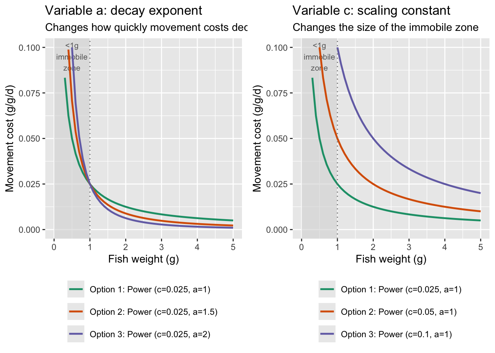
fncMoveCost_power with c = 0.025 and a = 1 seems like a reasonable starting place…although note that cost of movement is basically negligible at weights > 5g
But the allometric scaling function appears to have the greatest support in the literature. See Schmidt-Nielsen (1972, Science), Ohlberger et al. (2005, J. Exp. Zoo.), and Ohlberger et al. (2006, J. Comp. Phys. B): showed how energetic cost of movement scales with body size within and across species using allometric scaling functions.
w_seq <- seq(0.1, 150, by = 0.1)
# variable a
cost_df <- tibble(weight = w_seq) |>
mutate(
`Option 1: Allometric (c=0.025, b=0.75)` = fncMoveCost_allometric(weight, c=0.025, b=0.75),
`Option 2: Allometric (c=0.025, b=0.50)` = fncMoveCost_allometric(weight, c=0.025, b=0.50),
`Option 3: Allometric (c=0.025, b=0.25)` = fncMoveCost_allometric(weight, c=0.025, b=0.25)
) |>
pivot_longer(-weight, names_to = "option", values_to = "cost")
p1 <- ggplot(cost_df, aes(x = weight, y = cost, color = option)) +
# Shade <1g region (essentially immobile zone)
annotate("rect", xmin = 0, xmax = 1, ymin = -Inf, ymax = Inf,
fill = "grey85", alpha = 0.6) +
annotate("text", x = 0.5, y = 0.095, label = "<1g\nimmobile\nzone",
size = 2.8, color = "grey40", hjust = 0.5) +
geom_line(linewidth = 0.9) +
scale_color_brewer(palette = "Dark2") +
scale_y_continuous(limits = c(0, 0.1)) +
scale_x_continuous(breaks = c(1, 10, 25, 50, 100, 150)) +
geom_vline(xintercept = 1, linetype = "dotted", color = "grey50") +
labs(
x = "Fish weight (g)",
y = "Movement cost (g/g/d)",
color = NULL,
title = "Variable b: metabolic exponent",
subtitle = "Changes how quickly costs decay w/ size"
) +
theme(legend.position = "bottom") +
guides(color = guide_legend(ncol = 1))
p1 <- p1 + xlim(0, 5)
# variable c
cost_df <- tibble(weight = w_seq) |>
mutate(
`Option 1: Allometric (c=0.025, b=0.75)` = fncMoveCost_allometric(weight, c=0.025, b=0.75),
`Option 2: Allometric (c=0.05, b=0.75)` = fncMoveCost_allometric(weight, c=0.05, b=0.75),
`Option 3: Allometric (c=0.1, b=0.75)` = fncMoveCost_allometric(weight, c=0.1, b=0.75)
) |>
pivot_longer(-weight, names_to = "option", values_to = "cost")
p2 <- ggplot(cost_df, aes(x = weight, y = cost, color = option)) +
# Shade <1g region (essentially immobile zone)
annotate("rect", xmin = 0, xmax = 1, ymin = -Inf, ymax = Inf,
fill = "grey85", alpha = 0.6) +
annotate("text", x = 0.5, y = 0.095, label = "<1g\nimmobile\nzone",
size = 2.8, color = "grey40", hjust = 0.5) +
geom_line(linewidth = 0.9) +
scale_color_brewer(palette = "Dark2") +
scale_y_continuous(limits = c(0, 0.1)) +
scale_x_continuous(breaks = c(1, 10, 25, 50, 100, 150)) +
geom_vline(xintercept = 1, linetype = "dotted", color = "grey50") +
labs(
x = "Fish weight (g)",
y = "Movement cost (g/g/d)",
color = NULL,
title = "Variable c: scaling constant",
subtitle = "Changes the ~size of the immobile zone"
) +
theme(legend.position = "bottom") +
guides(color = guide_legend(ncol = 1))
p2 <- p2 + xlim(0, 5)
ggpubr::ggarrange(
p1, p2,
nrow = 1
)
Show c = 0.025 and b = 0.6 across full range of weights
cost_df <- tibble(weight = w_seq) |>
mutate(
`Allometric (c=0.025, b=0.6)` = fncMoveCost_allometric(weight, c=0.025, b=0.6)
) |>
pivot_longer(-weight, names_to = "option", values_to = "cost")
ggplot(cost_df, aes(x = weight, y = cost, color = option)) +
# Shade <1g region (essentially immobile zone)
annotate("rect", xmin = 0, xmax = 1, ymin = -Inf, ymax = Inf,
fill = "grey85", alpha = 0.6) +
# annotate("text", x = 0.5, y = 0.095, label = "<1g\nimmobile\nzone",
# size = 2.8, color = "grey40", hjust = 0.5) +
geom_line(linewidth = 0.9) +
scale_color_brewer(palette = "Dark2") +
scale_y_continuous(limits = c(0, 0.065)) +
scale_x_continuous(breaks = c(1, 10, 25, 50, 100, 150)) +
geom_vline(xintercept = 1, linetype = "dotted", color = "grey50") +
labs(
x = "Fish weight (g)",
y = "Movement cost (g/g/d)",
color = NULL
) +
theme(legend.position = "bottom") +
guides(color = guide_legend(ncol = 1))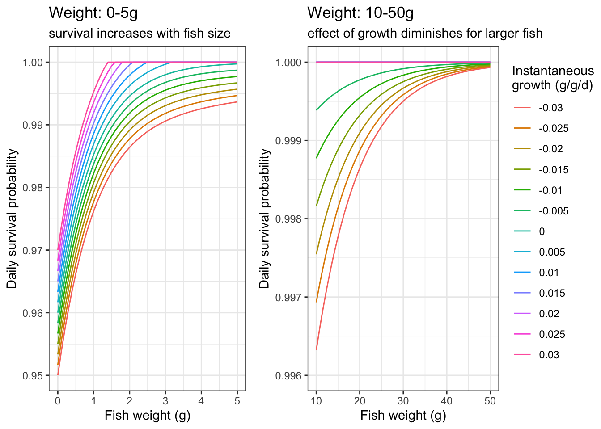
How do movement costs under different parameter sets actually compare to differences in growth between habitats, for different sized fish?
sizes <- c(0.5, 1.0, 2.0)
growth_diff_df <- habitat_df |>
filter(dayofsim <= 200) |>
select(date, dayofsim, temp_warm, temp_cold) |>
crossing(weight = sizes) |>
rowwise() |>
mutate(
wt_idx_w = which.min(abs(wt_seq_ibm - temp_warm)),
wt_idx_c = which.min(abs(wt_seq_ibm - temp_cold)),
pcmax_w = min(fncTempDepend(temp_warm), get_patchpcmax(dayofsim, "warm")),
pcmax_c = min(fncTempDepend(temp_cold), get_patchpcmax(dayofsim, "cold")),
cmax = fncAllomCmax(weight),
ra_idx_w = pmax(1L, pmin(400L, which.min(abs(ra_seq_ibm - cmax * pcmax_w)))),
ra_idx_c = pmax(1L, pmin(400L, which.min(abs(ra_seq_ibm - cmax * pcmax_c)))),
ma_idx = pmax(1L, pmin(4500L, round(weight + 1e-9))), # avoid banker's rounding at 0.5
g_warm = wt.growth[wt_idx_w, ra_idx_w, ma_idx],
g_cold = wt.growth[wt_idx_c, ra_idx_c, ma_idx],
move_cost = fncMoveCost_allometric(weight, c = 0.1, b = 0.3),
`Cold → Warm` = g_warm - g_cold,
`Warm → Cold` = g_cold - g_warm
) |>
ungroup()
# Parameter combinations to evaluate
param_grid <- tribble(
~c_val, ~b_val, ~label,
0.025, 0.60, "c=0.025, b=0.60 (current)",
0.050, 0.60, "c=0.050, b=0.60",
0.100, 0.60, "c=0.100, b=0.60",
0.050, 0.40, "c=0.050, b=0.40",
0.100, 0.40, "c=0.100, b=0.40"
)
# Cost threshold for each (weight × param combo)
cost_grid <- param_grid |>
crossing(weight = c(0.5, 1.0, 2.0)) |>
mutate(
move_cost = fncMoveCost_allometric(weight, c = c_val, b = b_val),
size_lab = paste0(weight, " g fish")
)
# Growth difference data (already computed)
gdiff_long <- growth_diff_df |>
mutate(size_lab = paste0(weight, " g fish")) |>
pivot_longer(c(`Cold → Warm`, `Warm → Cold`),
names_to = "direction", values_to = "g_diff")
ggplot() +
geom_line(data = gdiff_long,
aes(x = date, y = g_diff, color = direction), linewidth = 0.8) +
geom_hline(data = cost_grid,
aes(yintercept = move_cost, linetype = label),
linewidth = 0.7, color = "black") +
geom_hline(yintercept = 0, color = "grey60", linewidth = 0.3) +
facet_wrap(~size_lab, nrow = 1) +
scale_color_manual(values = c("Cold → Warm" = "#d95f02", "Warm → Cold" = "#1f78b4")) +
scale_linetype_manual(
values = c(
"c=0.025, b=0.60 (current)" = "solid",
"c=0.050, b=0.60" = "longdash",
"c=0.100, b=0.60" = "dashed",
"c=0.050, b=0.40" = "dotdash",
"c=0.100, b=0.40" = "dotted"
)
) +
labs(
x = NULL, y = "Growth difference (g/g/d)",
color = "Movement direction",
linetype = "Movement cost parameters",
title = "Growth potential difference vs. movement cost — parameter sensitivity",
subtitle = "Fish should move when the coloured line exceeds the cost threshold (black)"
) +
theme_bw() +
theme(panel.grid.minor = element_blank(),
legend.position = "bottom",
legend.box = "vertical")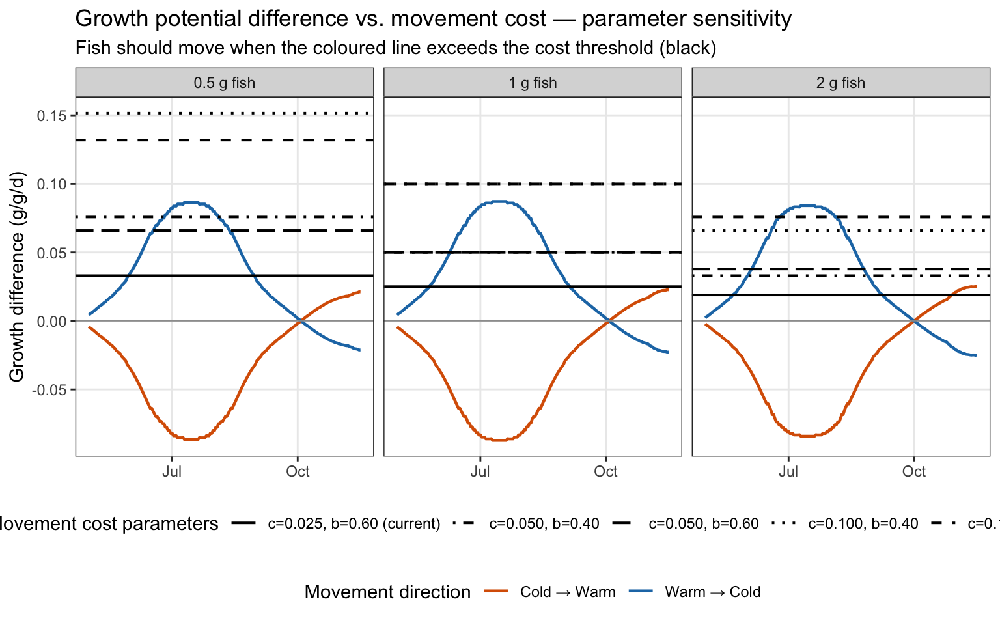
c = 0.100 and b = 0.40 seems like a good place to start b/c the cost is super high for small fish. While the growth advantage of being in cold does exceed the cost by mid-summer, fish should have grown out of the “small fish” threshold where we would expect movement capacity to be limited.
Compare this to some other parameter sets
cost_df <- tibble(weight = w_seq) |>
mutate(
`Allometric (c=0.100, b=0.3)` = fncMoveCost_allometric(weight, c=0.1, b=0.3),
`Allometric (c=0.100, b=0.4)` = fncMoveCost_allometric(weight, c=0.1, b=0.4),
`Allometric (c=0.025, b=0.6)` = fncMoveCost_allometric(weight, c=0.025, b=0.6)
) |>
pivot_longer(-weight, names_to = "option", values_to = "cost")
ggplot(cost_df, aes(x = weight, y = cost, color = option)) +
# Shade <1g region (essentially immobile zone)
annotate("rect", xmin = 0, xmax = 1, ymin = -Inf, ymax = Inf,
fill = "grey85", alpha = 0.6) +
# annotate("text", x = 0.5, y = 0.095, label = "<1g\nimmobile\nzone",
# size = 2.8, color = "grey40", hjust = 0.5) +
geom_line(linewidth = 0.9) +
scale_y_log10() +
scale_color_brewer(palette = "Dark2") +
# scale_y_continuous(limits = c(0, 0.065)) +
scale_x_continuous(breaks = c(1, 10, 25, 50, 100, 150)) +
geom_vline(xintercept = 1, linetype = "dotted", color = "grey50") +
labs(
x = "Fish weight (g)",
y = "Movement cost (g/g/d)",
color = NULL
) +
theme(legend.position = "bottom") +
guides(color = guide_legend(ncol = 1))
Create functions to represent density-dependent food availability. I.e., reduce ration size in patches by patch density.
Ration size decreases linearly with fish density, up to some threshold above which there is no effect of there is no effect of density of ration size. Fullerton uses 1 fish per m^2 of as the upper threshold. Here, I use an arbitrary MaxDensity4Growth, but we can change this to a value that makes sense for our model. Fullerton’s IBM calculates this scalar, then multiplies by densities after movement to compute experienced/realized ration.
MaxDensity4Growth <- 50 # growth is not depressed further above this density (currently this is arbitary)
fdens_raw <- fdens <- seq(from = 1, to = 100, by = 1) # create sequence of fish density
fdens[fdens > MaxDensity4Growth] <- MaxDensity4Growth # high densities cap out at MaxDensity4Growth
density.effect <- fncRescale((1 - c(fdens, 0.01, MaxDensity4Growth)), c((0.5),1)) # calculate density effect scalar
density.effect <- density.effect[-c(length(density.effect), (length(density.effect) - 1))] #remove the last 2 temporary values
par(mar = c(4.5,4.5,1,1))
plot(density.effect ~ fdens_raw, type = "l", xlab = "Fish density", ylab = "Density effect on ration (multiplier)")
abline(v = MaxDensity4Growth, col = "red", lty = 2)
legend("topright", legend = c("Density effect", "Density threshold"), col = c("black", "red"), lty = c(1,2), bty = "n")
Hyperbolic (Beverton-Holt style) reduction in food availability, i.e., scramble competition. This function can allow the strength of competition to differ among habitats.
Choice of K should depend on range of possible densities… K is the sensitive parameter and will substantially affect results.
fncDensityRation <- function(fish_pop, R_warm, R_cold, k_warm = 50, k_cold = 50) {
fish_pop %>%
mutate(
R_base = if_else(patch == "warm", R_warm, R_cold),
k = if_else(patch == "warm", k_warm, k_cold),
ration = R_base * k / (k + density - 1)
) %>%
select(-R_base, -k)
}Visualize how ration scales with density under different values of k to help calibrate the parameter. Both patches have the same baseline ration, so curves are identical
# Use actual R_warm and R_cold from the session as the baseline
R_warm <- get_patchration(1, "warm")
R_cold <- get_patchration(1, "cold")
expand.grid(
density = 1:200,
k = c(10, 25, 50, 100, 200),
patch = c("warm", "cold")
) %>%
mutate(
R_base = if_else(patch == "warm", R_warm, R_cold),
ration = R_base * k / (k + density - 1),
k_lab = factor(paste0("k = ", k), levels = paste0("k = ", sort(unique(k))))
) %>%
ggplot(aes(x = density, y = ration, color = k_lab)) +
geom_line() +
geom_hline(aes(yintercept = R_base), linetype = "dashed", color = "grey50") +
facet_wrap(~ patch, labeller = label_both) +
labs(
x = "Fish density (N per patch)",
y = "Realized ration (g)",
color = "Half-saturation\ndensity (k)",
title = "Density-dependent ration reduction",
caption = "Dashed line = baseline ration (no density effect)"
)
This is the same as above but instead of passing the function a baseline ration, pass it the rations we computed based on temperature-based P_Cmax and size-based Cmax. Subtract 1 from density so that density-dependence only kicks in when N > 1
fncDensityRationScalar <- function(fish_pop, k_warm = 50, k_cold = 50) {
fish_pop %>%
mutate(
k = if_else(patch == "warm", k_warm, k_cold),
dd_scalar = 1 * k / (k + density - 1),
) %>%
select(-k)
}Visualize how P_Cmax scales with density under different values of k to help calibrate the parameter.
expand.grid(
density = 1:200,
k = c(10, 25, 50, 100, 200)
) %>%
mutate(
dd_scalar = 1 * k / (k + density-1),
k_lab = factor(paste0("k = ", k), levels = paste0("k = ", sort(unique(k))))
) %>%
ggplot(aes(x = density, y = dd_scalar, color = k_lab)) +
geom_line() +
labs(
x = "Fish density (N per patch)",
y = "P_Cmax scalar",
color = "Half-saturation\ndensity (k)",
title = "Density-dependent consumption reduction",
caption = "Dashed line = baseline P_Cmax (no density effect)"
)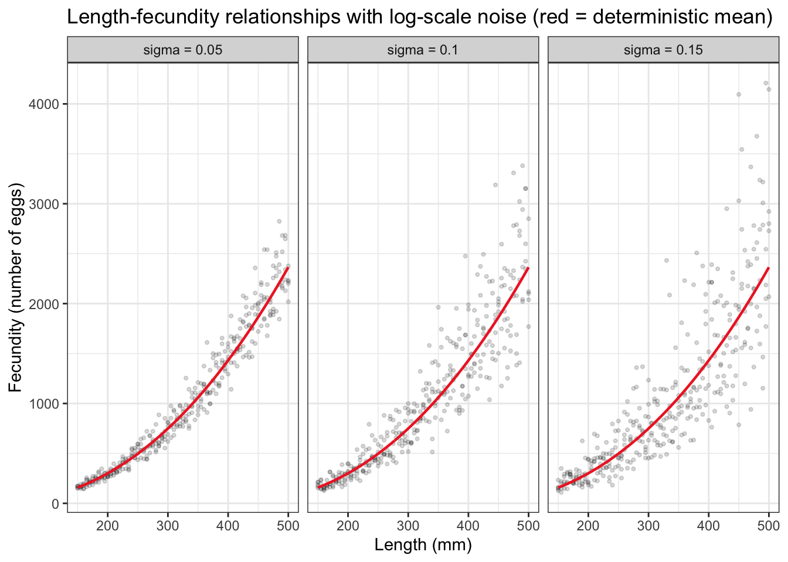
viewof k = Inputs.range([1, 500], {
value: 50,
step: 1,
label: "Half-saturation density (k)"
})
data = d3.range(1, 201).map(d => ({
density: d,
dd_scalar: k / (k + d - 1)
}))
Plot.plot({
marks: [
Plot.lineY(data, { x: "density", y: "dd_scalar", stroke: "steelblue", strokeWidth: 2 }),
Plot.ruleY([1], { stroke: "#999", strokeDasharray: "4,4" }),
Plot.ruleX([k], { stroke: "#e04e4e", strokeDasharray: "4,4" }),
Plot.text(
[{ density: k, dd_scalar: k / (k + k - 1) }],
{
x: "density",
y: "dd_scalar",
text: d => `scalar at k = ${d.dd_scalar.toFixed(2)}`,
dx: 8, dy: -8, fontSize: 11, fill: "#e04e4e"
}
)
],
x: { label: "Fish density (N per patch)" },
y: { label: "Pcmax scalar", domain: [0, 1.05] },
title: "Density-dependent consumption reduction",
caption: "Dashed lines: grey = baseline scalar (1.0), red = half-saturation point (k)",
width: 600,
height: 350
})Here is a simpler formulation, where ration size is distributed evenly across all individuals (pure scramble competition) and food supply within a patch is fixed. I.e., ration size of 0.1 g is evenly distributed among all fish in a patch. If we use this, it would probably make sense to define sub-patches (feeding stations) within the larger patches.
fncDensityRation_ld <- function(fish_pop, R_warm, R_cold) {
fish_pop %>%
mutate(food = if_else(patch == "warm", R_warm, R_cold),
ration = food / density
) %>%
select(-food)
}
# set up objects as they would appear in the simulation loop
R_warm <- get_patchration(1, "warm")
R_cold <- get_patchration(1, "cold")
fish_pop <- bind_rows(
tibble(strategy = "resident_warm",
patch = "warm",
weight = pmax(1, rnorm(100, 0.1, 0)),
density = c(1:100)),
tibble(strategy = "resident_cold",
patch = "cold",
weight = pmax(1, rnorm(100, 0.1, 0)),
density = c(1:100))) %>%
mutate(pid = row_number(),
ration = if_else(patch == "warm", ration_warm, ration_cold))
# fish_pop
# for example, competition more intense in warm habitat
fish_pop <- fncDensityRation_ld(fish_pop, R_warm, R_cold)
fish_pop %>%
ggplot(aes(x = density, y = ration, color = patch)) +
geom_line() +
scale_color_manual(values = c("warm" = 2, "cold" = 4)) +
theme_bw() +
xlab("Fish density") +
ylab("Ration")
Fish experience mortality based on their size (cumulative experience) and instantaneous growth rate (measure of current experience). Smaller fish with lower growth rates more likely to die (sampled probabilistically at each time step). However, the effect of growth on survival diminishes as fish increase in size, i.e., survival for larger fish is less sensitive to growing conditions. Letcher et al. (2025, CJFAS) showed that the probability of negative growth strongly increased with fish age and size. They suggest that larger fish are more likely to recover from periods of mass loss, whereas smaller individuals may incur mortality.
Inputs:
df: data frame of fish table with only the survivorsminprob: smallest probability any fish can have of dying in any time step, before accounting for growth effectsb: controls steepness of the base size-survival curveb_interact: controls steepness of weight buffering on negative growth; smaller values = growth effects persist to larger sizes. Default b_interact is 0.03: buffering is near-complete ~150g, i.e., no effect of growth >150g.rescale: controls the relative effect of growth rates on survival. As minprob declines, you need a larger rescale value to generate meaningful variation in survival across the range of observed growth ratesNotes:
b_interact is 0.03fncSurviveVari <- function(df, minprob = 0.96, b = 1, b_interact = 0.03, rescale = 0.01){
# df: data frame of fish table with only the survivors, e.g., fish[fish$survive == 1, c("weight", "growth")]
# minprob: smallest probability any fish can have of dying in any time step
# b: controls steepness of the base size-survival curve
# b_interact: controls steepness of weight buffering on negative growth; smaller values = growth
# effects persist to larger sizes. Default 0.1 means buffering is near-complete ~50g, i.e., no effect of growth >50g.
# rescale: controls the relative effect of growth rates on survival. As minprob declines, you need a larger rescale value to generate meaningful variation in survival across the range of observed growth rates
# Weights
w <- df$weight # weight of fish that are alive at this time step
# Base size-survival curve: 0 for tiny fish, approaches 1 for large fish (controlled by b)
w_scale <- 1 - 1 / exp(b * w)
v <- minprob + (1 - minprob) * w_scale
# Growth during this time step that reflects recent conditions (i.e., a hungry/stressed fish may behave in ways that make it more vulnerable to predation, etc.)
g <- df$growth
g <- fncRescale(g, to = c(-rescale, rescale))
# Weight x growth interaction: larger fish are buffered from negative growth penalties
# (controlled independently from base curve via b_interact).
# Small fish bear the full cost of negative growth; positive growth benefits are size-independent.
w_buf <- 1 - 1 / exp(b_interact * w)
g_effect <- ifelse(g < 0, g * (1 - w_buf), g)
# Amount of food eaten in previous time step (better survival if bellies full b/c hunkered down somewhere)
# f <- df$pvals
# f <- fncRescale(f, to = c(-0.001, 0.001))
# Probability of survival
prb.srv <- v + g_effect #+ f
prb.srv[prb.srv > 1] <- 1 # set upper bound at 1
# Sample from binomial distribution with probabilities of prb.srv to determine which fish survive this time step
survivors <- rbinom(n = nrow(df), size = 1, prob = prb.srv)
return(list(prb.srv, survivors))
#return(survivors)
}As an example, plot daily survival probabilities based on fish size and instantaneous growth
df <- expand_grid(
weight = seq(from = 0, to = 150, by = 0.1),
growth = seq(from = -0.03, to = 0.03, by = 0.005)#,
#pvals = seq(from = 0, to = 1, by = 0.1)
)
surv.list <- fncSurviveVari(df)
df <- df %>% mutate(prsurv = surv.list[[1]],
survivors = surv.list[[2]])
p1 <- df %>% #filter(pvals == 0.1) %>%
ggplot() +
geom_line(aes(x = weight, y = prsurv, color = as_factor(growth))) +
xlim(0,5) + theme_bw() +
xlab("Fish weight (g)") + ylab("Daily survival probability") +
labs(color = "Instantaneous\ngrowth (g/g/d)", title = "Weight: 0-5g", subtitle = "survival increases with fish size")
p2 <- df %>% #filter(pvals == 0.1) %>%
ggplot() +
geom_line(aes(x = weight, y = prsurv, color = as_factor(growth))) +
xlim(10,150) + ylim(0.9925,1) + theme_bw() +
xlab("Fish weight (g)") + ylab("Daily survival probability") +
labs(color = "Instantaneous\ngrowth (g/g/d)", title = "Weight: 10-150g", subtitle = "effect of growth diminishes for larger fish")
ggpubr::ggarrange(p1, p2, nrow = 1, common.legend = TRUE, legend = "right")
Show how b_interact affects weight x growth buffering: as b_interact gets smaller, growth effects on survival persist longer
# Compare b_interact values
df_comp <- expand_grid(
weight = seq(0, 50, by = 0.2),
growth = c(-0.03, 0.03),
b_interact = c(0.01, 0.05, 0.1, 0.5, 1.0)
) %>%
group_by(b_interact) %>%
mutate(prsurv = fncSurviveVari(
tibble(weight = weight, growth = growth),
minprob = 0.96, b = 1, b_interact = unique(b_interact)
)[[1]]) %>%
ungroup()
p1 <- df_comp %>%
filter(growth %in% c(-0.03, 0.03)) %>%
mutate(growth_label = ifelse(growth < 0, "Negative growth (−0.03)", "Positive growth (+0.03)")) |>
ggplot(aes(x = weight, y = prsurv, color = as_factor(b_interact), linetype = growth_label)) +
geom_line(linewidth = 0.7) +
theme_bw() +
scale_linetype_manual(values = c("dashed", "solid")) +
xlab("Fish weight (g)") + ylab("Survival probability") +
labs(color = "b_interact", linetype = "Growth",
title = "Effect of b_interact")
p2 <- df_comp %>%
filter(growth %in% c(-0.03, 0.03)) %>%
mutate(growth_label = ifelse(growth < 0, "Negative growth (−0.03)", "Positive growth (+0.03)")) |>
ggplot(aes(x = weight, y = prsurv, color = as_factor(b_interact), linetype = growth_label)) +
geom_line(linewidth = 0.7) +
theme_bw() +
coord_cartesian(ylim = c(0.989, 1)) +
scale_linetype_manual(values = c("dashed", "solid")) +
xlab("Fish weight (g)") + ylab("Survival probability") +
labs(color = "b_interact", linetype = "Growth",
title = "Zoomed in: high surival")
ggpubr::ggarrange(p1, p2, nrow = 1, common.legend = TRUE, legend = "right")
Explore how different values of b_interact impact cumulative seasonal survival probability, i.e., over a 90 day/3 month period:
df_comp <- expand_grid(
weight = c(0.5, 1, 2, 5, 10, 20, 50),
growth = c(-0.03, 0.03),
b_interact = c(0.01, 0.05, 0.1, 0.5, 1.0)
) %>%
group_by(b_interact) %>%
mutate(prsurv = fncSurviveVari(
tibble(weight = weight, growth = growth),
minprob = 0.96, b = 1, b_interact = unique(b_interact)
)[[1]]) %>%
ungroup() %>%
mutate(seasonal = prsurv^90)
# Focus: survival gap between worst and best growth, by weight and b_interact
df_gap <- df_comp %>%
group_by(weight, b_interact) %>%
summarise(
seasonal_worst = min(seasonal),
seasonal_best = max(seasonal),
gap = seasonal_best - seasonal_worst
) %>%
ungroup()
# plot seasonal survival by growth and weight
df_comp %>%
mutate(
growth_label = case_when(
growth == -0.03 ~ "Negative (−0.03)",
growth == 0.03 ~ "Positive (+0.03)"
),
b_label = paste0("b_interact = ", b_interact)
) %>%
ggplot(aes(x = weight, y = seasonal, color = as_factor(b_interact), linetype = growth_label)) +
geom_line(linewidth = 0.8) +
geom_point(size = 2) +
scale_x_log10(breaks = c(0.5, 1, 2, 5, 10, 20, 50)) +
scale_y_continuous(labels = scales::percent_format(accuracy = 1)) +
theme_bw() +
xlab("Fish weight (g, log scale)") +
ylab("90-day survival") +
labs(color = "b_interact",
title = "Seasonal survival by growth, weight, and b_interact",
subtitle = "Larger b_interact prolongs survival costs of slow growth")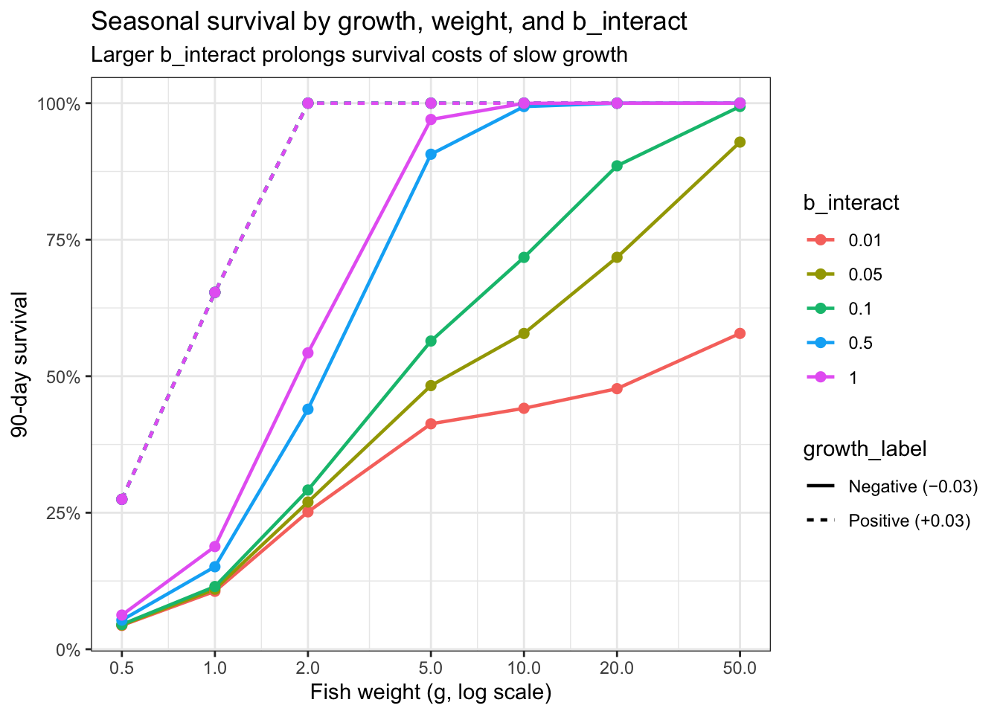
# plot difference between
ggplot(df_gap, aes(x = weight, y = gap, color = as_factor(b_interact))) +
geom_line(linewidth = 0.8) +
geom_point(size = 2) +
scale_x_log10(breaks = c(0.5, 1, 2, 5, 10, 20, 50)) +
scale_y_continuous(labels = scales::percent_format(accuracy = 1)) +
theme_bw() +
xlab("Fish weight (g, log scale)") +
ylab("90-day survival gap\n(best − worst growth)") +
labs(color = "b_interact",
title = "Seasonal survival gap between the fastest and slowest growing fish",
subtitle = "Growth-driven survival gaps are greatest for small (but not the smallest) fish")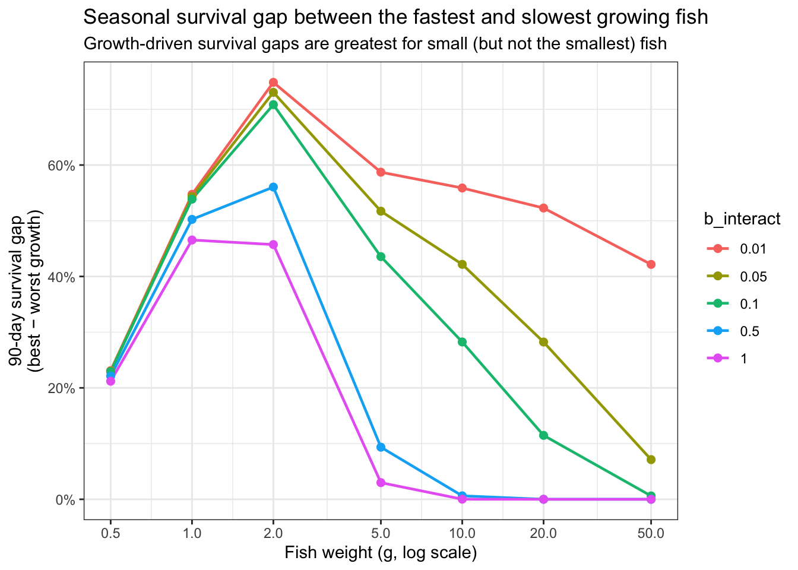
minprob–the minimum daily probability of survival, which is experienced by the smallest fish–should probably be based on some empirical estimates. Elliott (1993, Fisheries Research) puts this a bit lower for BNT: mean daily mortality rate during the critical period is 6.4% (minprob = 0.936). Maybe also see Elliott (1989, Journal of Animal Ecology).
Write simple, size-dependent survival function: daily survival probability increases with size.
fncSurviveSize <- function(weight, minprob = 0.96, maxprob = 1, b = 1){
# weight: numeric vector of fish weights
# minprob: daily survival probability for the smallest fish (asymptote at w = 0)
# maxprob: daily survival probability asymptote for very large fish (default 1)
# b: controls steepness of the size-survival curve
# Weights
w <- weight # weight of fish that are alive at this time step
# Base size-survival curve: 0 for tiny fish, approaches 1 for large fish (controlled by b)
w_scale <- 1 - 1 / exp(b * w)
v <- minprob + (maxprob - minprob) * w_scale
# Probability of survival
prb.srv <- v
prb.srv[prb.srv > 1] <- 1 # set upper bound at 1
# Sample from binomial distribution with probabilities of prb.srv to determine which fish survive this time step
survivors <- rbinom(n = length(weight), size = 1, prob = prb.srv)
return(list(prb.srv, survivors))
#return(survivors)
}Plot daily survival probabilities based on fish size alone
myweights <- seq(from = 0, to = 150, by = 0.1)
surv.list <- fncSurviveSize(myweights, b = 1)
df <- tibble(weight = myweights,
prsurv = surv.list[[1]],
survivors = surv.list[[2]])
p1 <- df %>% #filter(pvals == 0.1) %>%
ggplot() +
geom_line(aes(x = weight, y = prsurv)) +
xlim(0,5) + theme_bw() +
xlab("Fish weight (g)") + ylab("Daily survival probability") +
labs(color = "Instantaneous\ngrowth (g/g/d)", title = "Weight: 0-5g", subtitle = "survival increases with fish size")
p2 <- df %>% #filter(pvals == 0.1) %>%
ggplot() +
geom_line(aes(x = weight, y = prsurv)) +
xlim(10,150) + ylim(0.9925,1) + theme_bw() +
xlab("Fish weight (g)") + ylab("Daily survival probability") +
labs(color = "Instantaneous\ngrowth (g/g/d)", title = "Weight: 10-150g", subtitle = "effect of growth diminishes for larger fish")
ggpubr::ggarrange(p1, p2, nrow = 1, common.legend = TRUE, legend = "right")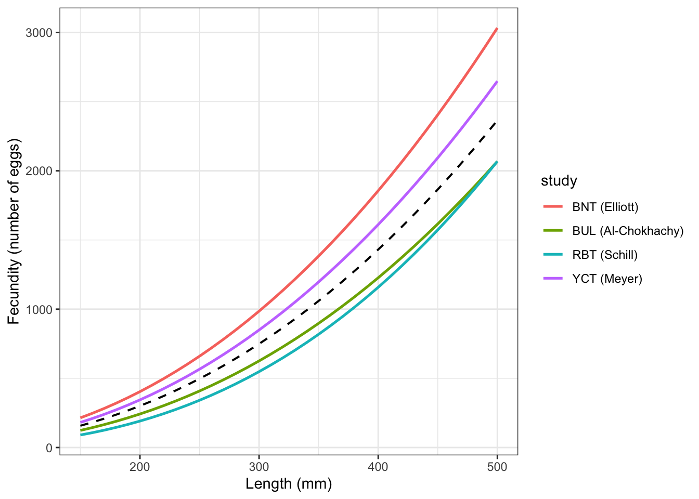
Changing the asymptotic survival probability could be used as a way to induce senescence/limits on life span
expand_grid(
asymp = c(seq(from = 0.995, to = 0.999, by = 0.001), 0.9995, 0.9999),
days = seq(from = 0, to = 2500, by = 100)
) %>%
mutate(survival = asymp^days) %>%
ggplot(aes(x = days/365, y = survival, group = factor(asymp), color = factor(asymp))) +
geom_line() +
theme_bw() + xlab("Years") + ylab("Survival probability")Sporadic review of literature suggests that annual survival probabilities of trout in streams averages 0.5, but this is super variable. Annual survival = 0.5 corresponds to maxprob = 0.998. Alternatively, maxprob = 0.9994 yields an annual survival probability of ~0.8.
tibble(maxprob = seq(from = 0.995, to = 1, by = 0.0001)) %>% mutate(annsurv = maxprob^365) %>%
ggplot(aes(x = maxprob, y = annsurv)) + geom_line() +
theme_bw() + theme(panel.grid = element_blank()) +
xlab("Maximum daily survival probability") + ylab("Annual survival probability") +
geom_abline(slope = 0, intercept = 0.54, color = "grey50", linetype = "dashed") +
annotate("text", x = 0.995, y = 0.54+0.03, label = "Bonneville CT (Budy et al., 2007, TAFS)", hjust = 0, color = "grey50") +
geom_abline(slope = 0, intercept = 0.6, color = "grey50", linetype = "dashed") +
annotate("text", x = 0.995, y = 0.6+0.03, label = "Bull trout (Al-Chokhachy and Budy, 2008, TAFS)", hjust = 0, color = "grey50") +
geom_abline(slope = 0, intercept = 0.34, color = "grey50", linetype = "dashed") +
annotate("text", x = 0.995, y = 0.34+0.03, label = "Brook trout (Kanno et al., 2014, CJFAS)", hjust = 0, color = "grey50") +
geom_abline(slope = 0, intercept = 0.41, color = "grey50", linetype = "dashed") +
annotate("text", x = 0.995, y = 0.41+0.03, label = "Yellowstone CT (Uthe et al., 2016, NAJFM)", hjust = 0, color = "grey50")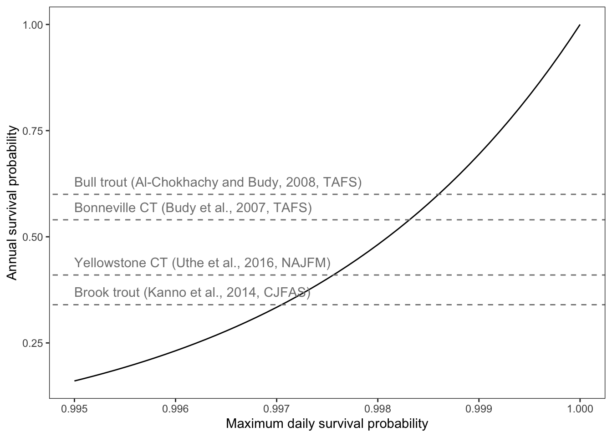
The problem with fncSurvive() as specified above is that the effect of growth on survival is rescaled relative to the range of growth rates experienced on that day. So how well a fish survives is relative to growth experienced by all peers. This is a little odd because even if growth rates are positive for all fish, there will always be some fish (the slowest growers) that experienced reduced survival probability. In practice, what ends up happening is that cold residents experience very high mortality at the beginning of our “simple/test” simulation because growth rates are slightly higher in the warm habitat, despite growth being very similar and temps being just 0.2 C colder. So instead of rescaling the growth effect relative to growth of peers on that day, we can rescale it to a fixed range of growth rates that we might typically experience in our simulation.
Re-write the weight and growth dependent survival functions, but rescale the effect of growth on survival according to a fixed range, rather than the range of growth rates experienced on the day in question.
fncSurviveFixed <- function(df, minprob = 0.96, b = 1, b_interact = 0.03, rescale = 0.01, g_range = c(-0.03, 0.03)){
# df: data frame of fish table with only the survivors, e.g., fish[fish$survive == 1, c("weight", "growth")]
# minprob: smallest probability any fish can have of dying in any time step
# b: controls steepness of the base size-survival curve
# b_interact: controls steepness of weight buffering on negative growth; smaller values = growth
# effects persist to larger sizes. Default 0.03 means buffering is near-complete ~50g, i.e., no effect of growth >50g.
# rescale: controls the relative effect of growth rates on survival. As minprob declines, you need a larger rescale value to generate meaningful variation in survival across the range of observed growth rates
# g_range: fixed [min, max] instantaneous growth rate (g/g/d) used to rescale growth effects.
# Unlike fncSurvive(), this is constant across days, so a fish growing slowly on a
# day when all fish grow slowly is not penalized relative to its peers.
# Weights
w <- df$weight # weight of fish that are alive at this time step
# Base size-survival curve: 0 for tiny fish, approaches 1 for large fish (controlled by b)
w_scale <- 1 - 1 / exp(b * w)
v <- minprob + (1 - minprob) * w_scale
# Growth during this time step that reflects recent conditions (i.e., a hungry/stressed fish may behave in ways that make it more vulnerable to predation, etc.)
g <- df$growth
# Clamp to fixed range before rescaling so extreme values don't extrapolate beyond [-rescale, rescale]
g_clamped <- pmax(pmin(g, g_range[2]), g_range[1])
g <- fncRescale(g_clamped, to = c(-rescale, rescale), from = g_range)
# Weight x growth interaction: larger fish are buffered from negative growth penalties
# (controlled independently from base curve via b_interact).
# Small fish bear the full cost of negative growth; positive growth benefits are size-independent.
w_buf <- 1 - 1 / exp(b_interact * w)
g_effect <- ifelse(g < 0, g * (1 - w_buf), g)
# Probability of survival
prb.srv <- v + g_effect
prb.srv[prb.srv > 1] <- 1 # set upper bound at 1
# Sample from binomial distribution with probabilities of prb.srv to determine which fish survive this time step
survivors <- rbinom(n = nrow(df), size = 1, prob = prb.srv)
return(list(prb.srv, survivors))
}Plot daily survival probabilities: this should look the same as the example above, b/c above I used the same range of growth rates.
df <- expand_grid(
weight = seq(from = 0, to = 150, by = 0.1),
growth = seq(from = -0.03, to = 0.03, by = 0.005)#,
#pvals = seq(from = 0, to = 1, by = 0.1)
)
surv.list <- fncSurviveFixed(df)
df <- df %>% mutate(prsurv = surv.list[[1]],
survivors = surv.list[[2]])
p1 <- df %>% #filter(pvals == 0.1) %>%
ggplot() +
geom_line(aes(x = weight, y = prsurv, color = as_factor(growth))) +
xlim(0,5) + theme_bw() +
xlab("Fish weight (g)") + ylab("Daily survival probability") +
labs(color = "Instantaneous\ngrowth (g/g/d)", title = "Weight: 0-5g", subtitle = "survival increases with fish size")
p2 <- df %>% #filter(pvals == 0.1) %>%
ggplot() +
geom_line(aes(x = weight, y = prsurv, color = as_factor(growth))) +
xlim(10,150) + ylim(0.9925,1) + theme_bw() +
xlab("Fish weight (g)") + ylab("Daily survival probability") +
labs(color = "Instantaneous\ngrowth (g/g/d)", title = "Weight: 10-150g", subtitle = "effect of growth diminishes for larger fish")
ggpubr::ggarrange(p1, p2, nrow = 1, common.legend = TRUE, legend = "right")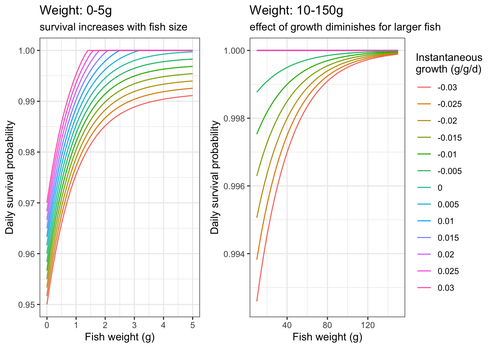
This mortality source represents the acute breakdown of physiological processes at high temperatures. It does not represent chronic effects of high temperatures on bioenergetics. The equation below is lifted from the InStream7 user manual (Railsback et al. 2023).
fncSurviveTemp() returns the daily survival probability due to high-temperature stress alone, using a logistic model fit to two anchor points:
T9: temperature at which daily survival = 0.9 (onset of stress)T1: temperature at which daily survival = 0.1 (near-lethal)The logistic midpoint T50 and slope k are derived analytically from these anchors:
\[P(\text{survive} \mid T) = \frac{1}{1 + e^{k(T - T_{50})}}\]
\[T_{50} = \frac{T_1 + T_9}{2}, \quad k = \frac{2 \ln(9)}{T_1 - T_9}\]
fncSurviveTemp <- function(temp, T1 = 30, T9 = 25.8) {
# temp: numeric vector of water temperatures experienced by each fish (e.g., growth_df$WT.actual)
# T1: temperature at which daily survival = 0.1 (near-lethal)
# T9: temperature at which daily survival = 0.9 (onset of stress)
# Returns a probability vector (length = length(temp)); multiply with other survival probabilities before sampling.
T50 <- (T1 + T9) / 2
k <- 2 * log(9) / (T1 - T9)
1 / (1 + exp(k * (temp - T50)))
}Plot the curve across a biologically relevant temperature range:
data.frame(temp = seq(15, 35, by = 0.1)) |>
dplyr::mutate(p_survive = fncSurviveTemp(temp)) |>
ggplot(aes(x = temp, y = p_survive)) +
geom_line() +
geom_point(data = data.frame(temp = c(25.8, 30), p_survive = c(0.9, 0.1)),
size = 3, shape = 21, fill = "white") +
geom_hline(yintercept = c(0.1, 0.9), linetype = "dashed", alpha = 0.4) +
geom_vline(xintercept = c(25.8, 30), linetype = "dashed", alpha = 0.4) +
theme_bw() + theme(panel.grid = element_blank()) +
xlab("Temperature (°C)") + ylab("Daily survival probability") +
labs(title = "Temperature-based daily survival",
subtitle = "Anchor points: P = 0.9 at 25.8°C, P = 0.1 at 30°C")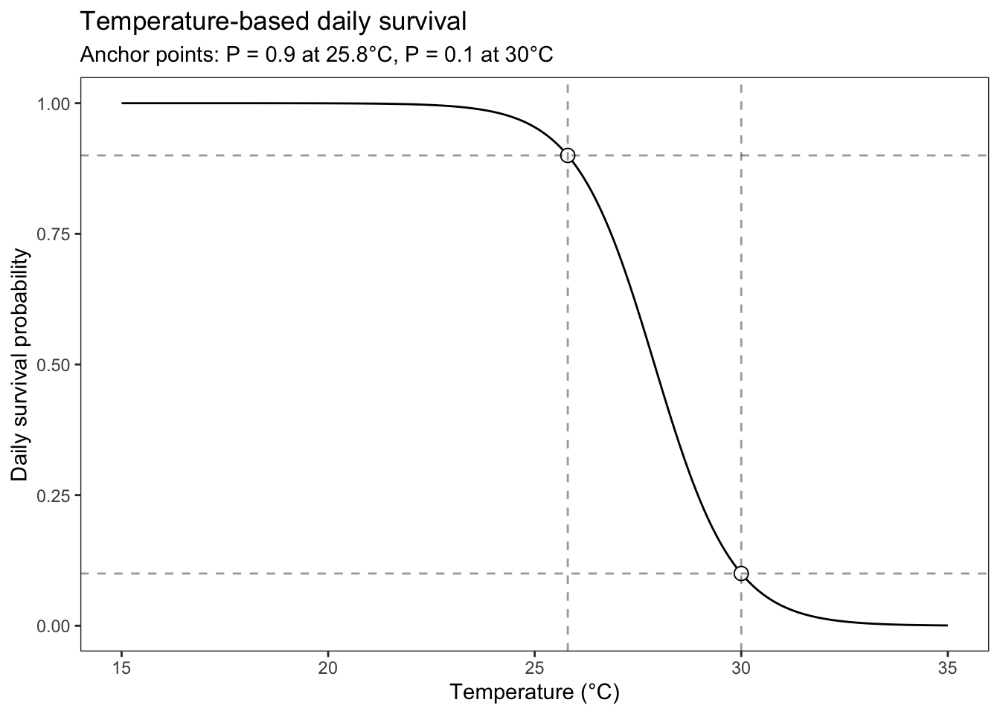
fncSurviveStarve() applies elevated mortality to fish in poor energetic condition. Condition is defined as the ratio of current weight to the fish’s historical peak weight:
\[K_{\text{rel}} = \frac{W_{\text{current}}}{W_{\text{peak}}}\]
A fish that has never lost mass has \(K_{\text{rel}} = 1\); a fish that has lost 40% of its peak mass has \(K_{\text{rel}} = 0.6\). Survival probability declines logistically below a threshold, using the same two-anchor parameterisation as fncSurviveTemp:
K9: condition at which daily survival = 0.9 (onset of starvation effects; default 0.60)K1: condition at which daily survival = 0.1 (near-lethal condition; default 0.40)Letcher et al. (1996, TAFS) provides the strong support for parameterizing mortality due to starvation in this way. In that paper, they show that proportional mass loss until starvation was indepenent of body size, but did depend on feeding history. Fish fed continuously before starvation died after losing 55% of body mass, but intermittent feeders died when they were slightly heavier (51-46% mass loss). Note that this study was conducted on yellow perch.
fncSurviveStarve <- function(condition, K9 = 0.55, K1 = 0.45) {
# condition: numeric vector of relative condition values (current_weight / peak_weight)
# K9: condition at which daily survival = 0.9 (onset of starvation effects)
# K1: condition at which daily survival = 0.1 (near-lethal)
# Returns a probability vector; multiply with other survival probabilities before sampling.
K50 <- (K1 + K9) / 2
k <- 2 * log(9) / (K9 - K1) # note: sign flipped vs. temperature — survival rises with condition
1 / (1 + exp(-k * (condition - K50)))
}Plot the curve to check the anchor points:
data.frame(condition = seq(0, 1, by = 0.01)) |>
dplyr::mutate(p_survive = fncSurviveStarve(condition)) |>
ggplot(aes(x = condition, y = p_survive)) +
geom_line() +
geom_point(data = data.frame(condition = c(0.55, 0.45), p_survive = c(0.9, 0.1)),
size = 3, shape = 21, fill = "white") +
geom_hline(yintercept = c(0.1, 0.9), linetype = "dashed", alpha = 0.4) +
geom_vline(xintercept = c(0.55, 0.45), linetype = "dashed", alpha = 0.4) +
theme_bw() + theme(panel.grid = element_blank()) +
xlab("Relative condition (current weight / peak weight)") + ylab("Daily survival probability") +
labs(title = "Condition-based (starvation) daily survival",
subtitle = "Anchor points: P = 0.9 at K = 0.75, P = 0.1 at K = 0.50")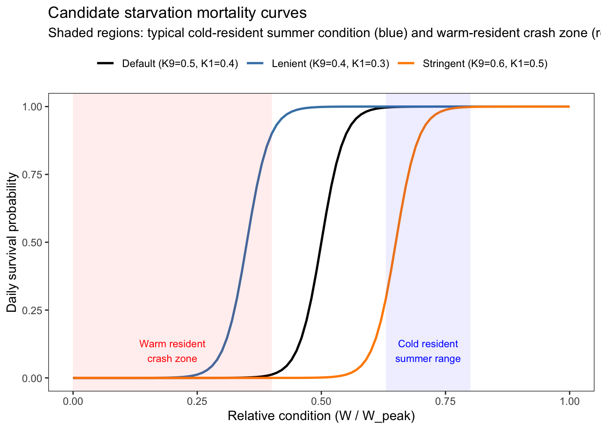
Plot the curve under a few candidate parameter sets to explore how the resulting curves relate to observed condition factors/mass loss from the IBM
candidate_params <- list(
"Stringent (K9=0.6, K1=0.5)" = c(K9 = 0.7, K1 = 0.6),
"Default (K9=0.5, K1=0.4)" = c(K9 = 0.55, K1 = 0.45),
"Lenient (K9=0.4, K1=0.3)" = c(K9 = 0.4, K1 = 0.3)
)
curve_df <- purrr::map_dfr(names(candidate_params), function(nm) {
p <- candidate_params[[nm]]
data.frame(
condition = seq(0, 1, by = 0.01),
p_survive = fncSurviveStarve(seq(0, 1, by = 0.01), K9 = p["K9"], K1 = p["K1"]),
params = nm
)
})
# Observed condition density per strategy (rug-style summary)
# cond_summary <- condition_long |>
# group_by(strategy) |>
# summarise(
# p05 = quantile(condition, 0.05, na.rm = TRUE),
# p25 = quantile(condition, 0.25, na.rm = TRUE),
# med = median(condition, na.rm = TRUE),
# .groups = "drop"
# )
ggplot(curve_df, aes(x = condition, y = p_survive, color = params)) +
geom_line(linewidth = 0.9) +
# Shade the range of typical cold-resident summer condition
annotate("rect", xmin = 0.63, xmax = 0.80, ymin = -Inf, ymax = Inf,
fill = "blue", alpha = 0.07) +
annotate("text", x = 0.715, y = 0.1, label = "Cold resident\nsummer range",
color = "blue", size = 3, hjust = 0.5) +
# Mark warm resident crash zone
annotate("rect", xmin = 0, xmax = 0.40, ymin = -Inf, ymax = Inf,
fill = "red", alpha = 0.07) +
annotate("text", x = 0.20, y = 0.1, label = "Warm resident\ncrash zone",
color = "red", size = 3, hjust = 0.5) +
scale_color_manual(values = c("black", "steelblue", "darkorange")) +
theme_bw() + theme(panel.grid = element_blank(), legend.position = "top") +
xlab("Relative condition (W / W_peak)") + ylab("Daily survival probability") +
labs(title = "Candidate starvation mortality curves",
subtitle = "Shaded regions: typical cold-resident summer condition (blue) and warm-resident crash zone (red)",
color = NULL)
The shaded regions above were generated from a previous simulation run. Current ranges of conditions between the strategies should be compared to survival curve used to make sure they are reasonable.
fncSurviveAge() applies a senescent mortality penalty to fish that exceed a threshold age. Unlike the logistic (sigmoid) forms used for temperature and starvation mortality — which impose sharp, near-lethal declines over a narrow range — aging effects are assumed to begin slowly and intensify with age, mirroring the concave-down rise of the size and growth survival modules but in the downward direction.
The function uses a Weibull-form exponential with shape parameter k:
age_thresh, the function returns 1.0 (no aging penalty).k > 2 ensures the derivative at the threshold is exactly zero — no abrupt onset — and the rate of mortality increase grows linearly with time past threshold.\[ p_{\text{age}} = p_{\min} + (1 - p_{\min})\,e^{-\lambda\,\max(0,\; \text{age} - \text{age\_thresh})^k} \]
Parameters: default values are tuned so that risk of senescent mortality kicks in past age 5, but fish have basically zero change of survival past age 8.
age: numeric vector of fish ages in years. In the IBM loop, pass d / 365 (or track cohort birth day and compute elapsed years).age_thresh: age (years) at which senescent mortality begins; default 5.lambda: scale parameter; larger values bring p_min closer in age.k: Weibull shape exponent; k > 1 gives the desired slow-then-accelerating decline. Default 3.p_min: asymptotic daily survival floor for very old fish; default 0.99.fncSurviveAge <- function(age, age_thresh = 5, lambda = 0.05, k = 3, p_min = 0.99) {
# age: numeric vector of fish ages in years (pass d / 365 from the IBM loop)
# age_thresh: age (years) at which senescent mortality begins (default 5)
# lambda: scale parameter; larger = faster approach to p_min (default 0.25)
# k: Weibull shape exponent; k > 1 gives a slow initial decline that
# accelerates with age — the mirror of the concave-down rise in fncSurvive().
# k = 1 reduces to a simple exponential (fast drop, decelerating). Default 2.
# p_min: asymptotic daily survival floor for very old fish (default 0.99)
# Returns a probability vector: 1.0 at/below threshold, declining with increasing age above.
# Default parameters: onset ~age 5, annual survival from aging alone approaches ~0 by age 8.
excess <- pmax(0, age - age_thresh)
p_min + (1 - p_min) * exp(-lambda * excess^k)
}Plot the curve to inspect daily and annualised survival across a range of ages and lambda values:
age_seq <- seq(0, 10, by = 0.05)
data.frame(
age = age_seq,
p_daily = fncSurviveAge(age_seq),
p_annual = fncSurviveAge(age_seq)^365
) |>
tidyr::pivot_longer(c(p_daily, p_annual), names_to = "metric", values_to = "p") |>
dplyr::mutate(metric = dplyr::recode(metric,
p_daily = "Daily survival probability",
p_annual = "Annual survival (aging only)"
)) |>
ggplot(aes(x = age, y = p)) +
geom_vline(xintercept = c(5, 8), linetype = "dashed", alpha = 0.4) +
geom_line(linewidth = 0.9) +
facet_wrap(~ metric, scales = "free_y") +
theme_bw() + theme(panel.grid = element_blank()) +
xlab("Age (years)") + ylab("Survival probability") +
labs(title = "Senescence-based daily survival (age_thresh = 5, lambda = 0.05, k = 3, p_min = 0.99)",
subtitle = "Dashed lines: onset age (5) and near-zero survival target (8)")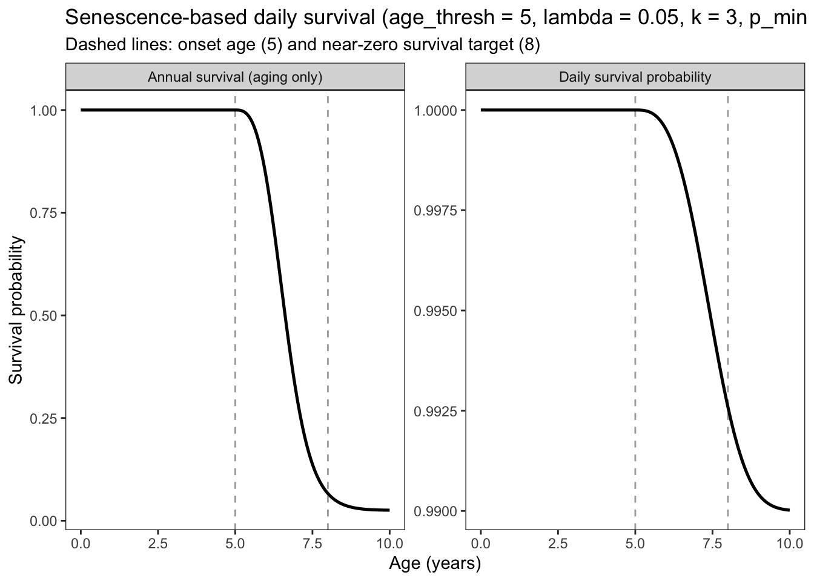
Because our bioenergetics-based IBM tracks fish size in terms of weight, we first need a function to convert weight to length, then another function to convert length to fecundity (number of eggs). We are making the simplifying assumption that the number of eggs laid is the number of fry hatching out of the gravel. Then we allow the size/growth based daily survival to thin the population.
First, we need a length-weight relationship to back calculate length from weight (b/c fecundity by body size relationships are typically parameterized in terms of length). Equation from Simpkins and Hubert (1996, Journal of Freshwater Ecology), but add random noise (sigma):
\[ log_{10}W = -5.023 + 3.024*log_{10}L + \sigma \]
# length in mm
# weight in grams
fncLW <- function(values, input = c("lengths", "weights"), sigma = 0) {
# values: vector of lengths (mm) or weights (g)
# input: type of data in 'values'; output will be the other type
# sigma: residual SD on the log10(weight) scale from the LW regression.
# Set sigma = 0 (default) for deterministic output.
# Biologically plausible values are typically 0.05–0.10.
# Noise is applied on the log10 scale (multiplicative on arithmetic scale).
input <- match.arg(input)
n <- length(values)
if (input == "lengths") {
# Length (mm) -> Weight (g): add noise on log10(W) scale
noise <- rnorm(n, mean = 0, sd = sigma)
10^(-5.023 + 3.024 * log10(values) + noise)
} else {
# Weight (g) -> Length (mm): noise propagated to log10(L) scale (sigma / b)
noise <- rnorm(n, mean = 0, sd = sigma / 3.024)
10^((log10(values) + 5.023) / 3.024 + noise)
}
}
# Show length -> weight for several sigma values
expand_grid(
length_mm = seq(0, 500, by = 5),
sigma = c(0.05, 0.10, 0.15)
) |>
# Replicate each combo a few times to show scatter
slice(rep(1:n(), each = 5)) |>
rowwise() |>
mutate(weight_g = fncLW(length_mm, input = "lengths", sigma = sigma)) |>
ungroup() |>
ggplot(aes(x = length_mm, y = weight_g)) +
geom_point(alpha = 0.15, size = 0.8) +
geom_line(
data = tibble(length_mm = seq(1, 500, by = 1),
weight_g = fncLW(seq(1, 500, by = 1), "lengths", sigma = 0)),
color = "firebrick2", linewidth = 0.8
) +
facet_wrap(~ paste0("sigma = ", sigma)) +
theme_bw() +
xlab("Length (mm)") + ylab("Weight (g)") +
labs(title = "Length-weight relationship with log-scale noise (red = deterministic mean)")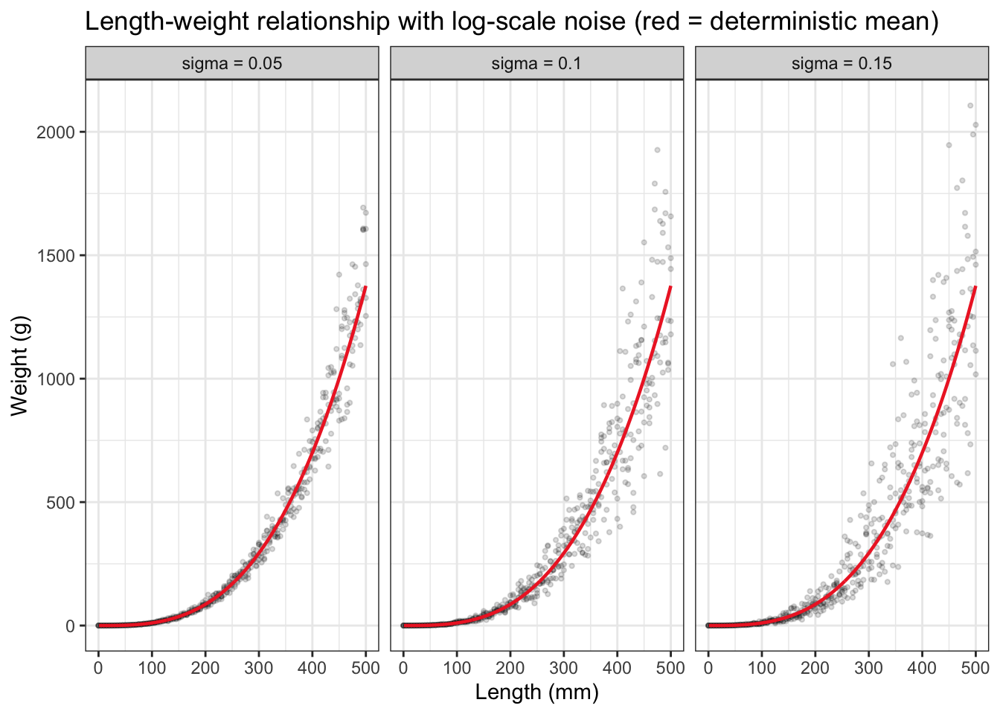
Setting sigmasomewhere between 0.05 and 0.1 is probably most biologically plausible.
The relationship between fecundity (the number of eggs) and body size (length) is given by the following equation:
\[ F = aL^b \]
Interestingly, the values of a and b appear to be relatively stable among species of trout:
| Species | Citation | a | b | Notes |
|---|---|---|---|---|
| Rainbow trout | Schill et al., 2010, NAJFM | 0.0002 | 2.599 | Restricted size range (120-250mm TL) |
| Yellowstone cutthroat trout | Meyer et al., 2003, TAFS | 0.0026 | 2.226 | Broad size range (100-450 mm TL) |
| Brown trout | Elliott, 1995, J Fish Biol | 0.001-0.006 | 2.048-2.359 | Broad size range (250-500 mm FL), multiple populations |
| Bull trout | Al-Chokhachy and Budy, 2008, TAFS | 0.001 | 2.34 | Limited sample size (n = 11) |
Plot length-fecundity relationships from these prior studies (colored lines) and add an ~average line to use for this study (dashed black line)
bind_rows(tibble(length_mm = seq(150, 500, by = 10), f_a = 0.0002, f_b = 2.599, study = "RBT (Schill)") %>% mutate(eggs = f_a * (length_mm^f_b)),
tibble(length_mm = seq(150, 500, by = 10), f_a = 0.0026, f_b = 2.226, study = "YCT (Meyer)") %>% mutate(eggs = f_a * (length_mm^f_b)),
tibble(length_mm = seq(150, 500, by = 10), f_a = 0.0035, f_b = 2.200, study = "BNT (Elliott)") %>% mutate(eggs = f_a * (length_mm^f_b)),
tibble(length_mm = seq(150, 500, by = 10), f_a = 0.0010, f_b = 2.340, study = "BUL (Al-Chokhachy)") %>% mutate(eggs = f_a * (length_mm^f_b))
) %>%
ggplot() +
geom_line(aes(x = length_mm, y = eggs, color = study), linewidth = 0.9) +
geom_line(data = tibble(length_mm = seq(150, 500, by = 10), f_a = 0.002, f_b = 2.25, study = "Mean") %>% mutate(eggs = f_a * (length_mm^f_b)),
aes(x = length_mm, y = eggs), color = "black", linewidth = 0.7, linetype = "dashed") +
theme_bw() + xlab("Length (mm)") + ylab("Fecundity (number of eggs)")
Code as a function
fncFecund <- function (lengths, sigma = 0) {
n <- length(lengths)
noise <- rnorm(n, mean = 0, sd = sigma)
10^(log10(0.002) + 2.25 * log10(lengths) + noise)
}Show length -> fecundity for several sigma values
expand_grid(
length_mm = seq(150, 500, by = 5),
sigma = c(0.05, 0.10, 0.15)
) |>
# Replicate each combo a few times to show scatter
slice(rep(1:n(), each = 5)) |>
rowwise() |>
mutate(eggs = fncFecund(length_mm, sigma = sigma)) |>
ungroup() |>
ggplot(aes(x = length_mm, y = eggs)) +
geom_point(alpha = 0.15, size = 0.8) +
geom_line(
data = tibble(length_mm = seq(150, 500, by = 1),
eggs = fncFecund(lengths = seq(150, 500, by = 1), sigma = 0)),
color = "firebrick2", linewidth = 0.8
) +
facet_wrap(~ paste0("sigma = ", sigma)) +
theme_bw() +
xlab("Length (mm)") + ylab("Fecundity (number of eggs)") +
labs(title = "Length-fecundity relationships with log-scale noise (red = deterministic mean)")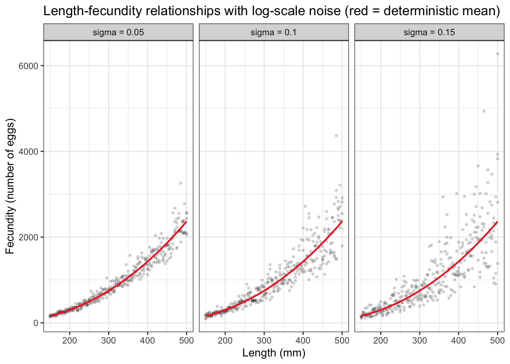
Setting sigmasomewhere between 0.1 and 0.15 is probably most biologically plausible…most literature shows pretty noisy relationships.
Show what this would look like in terms of fecundity by weight
tibble(weight_g = seq(300, 2000, by = 10)) %>%
mutate(eggs = 0.002*((10^((log10(weight_g) + 5.023) / 3.024)))^2.25) %>%
ggplot(aes(x = weight_g, y = eggs)) +
geom_line()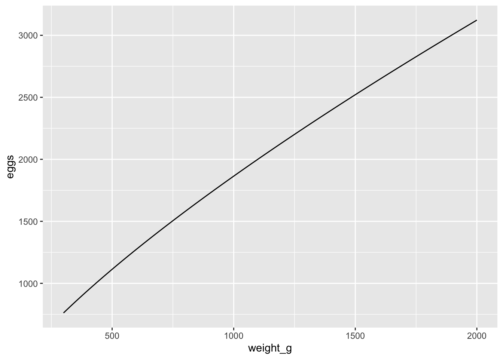
Alternatively, we can parameterize fecundity~weight relationship directly, following Bromage et al. (1990).
Show stock-specific relationships, black line is the combined mean reported in the paper:
mydat <- bind_rows(tibble(weight_g = seq(300, 2000, by = 10), f_a = 3.57, f_b = 0.446, stock = 1),
tibble(weight_g = seq(300, 2000, by = 10), f_a = 3.32, f_b = 0.393, stock = 2),
tibble(weight_g = seq(300, 2000, by = 10), f_a = 3.46, f_b = 0.481, stock = 3),
tibble(weight_g = seq(300, 2000, by = 10), f_a = 3.53, f_b = 0.465, stock = 4),
tibble(weight_g = seq(300, 2000, by = 10), f_a = 3.36, f_b = 0.536, stock = 5),
tibble(weight_g = seq(300, 2000, by = 10), f_a = 3.44, f_b = 0.554, stock = 6),
tibble(weight_g = seq(300, 2000, by = 10), f_a = 3.48, f_b = 0.516, stock = 7),
tibble(weight_g = seq(300, 2000, by = 10), f_a = 3.54, f_b = 0.574, stock = 8),
tibble(weight_g = seq(300, 2000, by = 10), f_a = 3.40, f_b = 0.702, stock = 9),
tibble(weight_g = seq(300, 2000, by = 10), f_a = 3.61, f_b = 0.626, stock = 10),
tibble(weight_g = seq(300, 2000, by = 10), f_a = 3.54, f_b = 0.468, stock = 11),
tibble(weight_g = seq(300, 2000, by = 10), f_a = 3.50, f_b = 0.650, stock = 12)
) %>%
mutate(eggs = 10^(f_a + f_b*log10(weight_g/1000)), stock = as.factor(stock))
p1 <- mydat %>%
ggplot() +
geom_line(aes(x = log10(weight_g), y = log10(eggs), color = stock), linewidth = 0.9) +
geom_line(data = tibble(weight_g = seq(300, 2000, by = 10), f_a = 3.461, f_b = 0.504, stock = "Mean") %>% mutate(eggs = 10^(f_a + f_b*log10(weight_g/1000))),
aes(x = log10(weight_g), y = log10(eggs)), color = "black", linewidth = 1, linetype = "dashed") +
theme_bw() + theme(panel.grid = element_blank()) +
xlab("log10(Weight, g)") + ylab("log10(Fecundity, number of eggs)")
p2 <- mydat %>%
ggplot() +
geom_line(aes(x = (weight_g), y = (eggs), color = stock), linewidth = 0.9) +
geom_line(data = tibble(weight_g = seq(300, 2000, by = 10), f_a = 3.461, f_b = 0.504, stock = "Mean") %>% mutate(eggs = 10^(f_a + f_b*log10(weight_g/1000))),
aes(x = (weight_g), y = (eggs)), color = "black", linewidth = 1, linetype = "dashed") +
theme_bw() + theme(panel.grid = element_blank()) +
xlab("Weight (g)") + ylab("Fecundity (number of eggs)")
ggpubr::ggarrange(p1, p2, nrow = 1, common.legend = TRUE, legend = "right")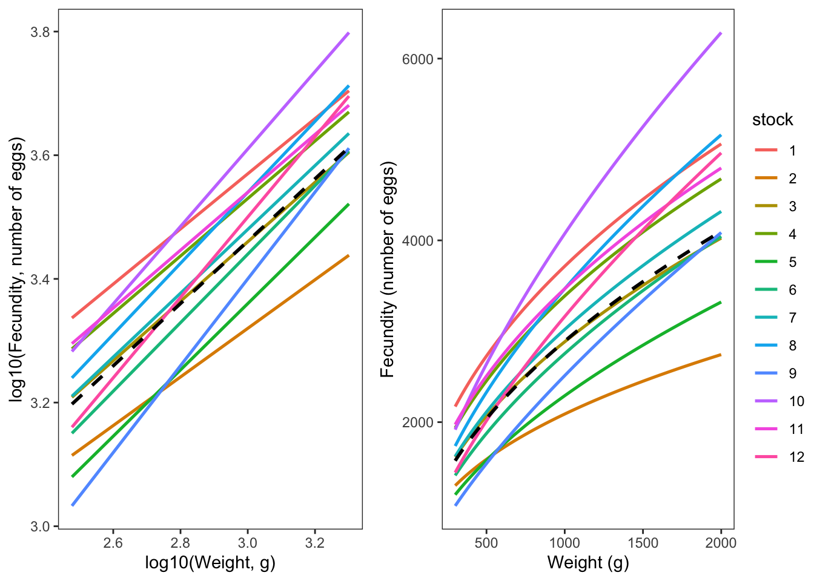
Reconstruct the 95% confidence interval using the information provided in Bromage et al. (1990).
# Parameters and SEs (95% CI = mean ± 1.96 * SE)
a_mean <- 3.461; a_se <- 0.015 / 1.96
b_mean <- 0.504; b_se <- 0.040 / 1.96
# Weight range in kg — adjust to match your species
wt_kg <- seq(0.3, 2, length.out = 300)
log_wt <- log10(wt_kg)
# Monte Carlo: draw (a, b) pairs from their marginal distributions
set.seed(8314)
n_draws <- 20000
a_draws <- rnorm(n_draws, a_mean, a_se)
b_draws <- rnorm(n_draws, b_mean, b_se)
# Predicted log10(fecundity) matrix: rows = weight values, cols = draws
pred_mat <- 10^(outer(log_wt, b_draws) + outer(rep(1, length(log_wt)), a_draws))
# Summarise across draws
plot_df <- tibble(
wt_kg = wt_kg,
wt_g = wt_kg*1000,
mean = rowMeans(pred_mat),
lower = apply(pred_mat, 1, quantile, 0.025),
upper = apply(pred_mat, 1, quantile, 0.975)
)
ggplot(plot_df, aes(x = wt_g)) +
geom_ribbon(aes(ymin = lower, ymax = upper), alpha = 0.25) +
geom_line(aes(y = mean), linewidth = 0.8) +
labs(
x = "Weight (g)",
y = "Fecundity (number of eggs)"
) +
theme_bw() + theme(panel.grid = element_blank())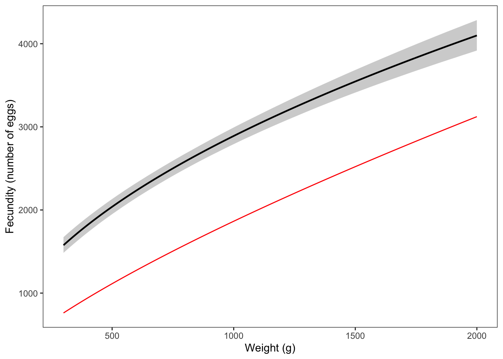
Now compare this with what we would have gotten by transforming weight to length and then calculating fecundity (red line)
ggplot(plot_df, aes(x = wt_g)) +
geom_ribbon(aes(ymin = lower, ymax = upper), alpha = 0.25) +
geom_line(aes(y = mean), linewidth = 0.8) +
labs(
x = "Weight (g)",
y = "Fecundity (number of eggs)"
) +
theme_bw() + theme(panel.grid = element_blank()) +
geom_line(data = tibble(weight_g = seq(300, 2000, by = 10)) %>% mutate(eggs = 0.002*((10^((log10(weight_g) + 5.023) / 3.024)))^2.25),
aes(x = weight_g, y = eggs), color = "red")
Importantly, the slope of the lines are basically the same (i.e., the relative reproductive benefit of large body size is the same for each method). While the intercepts (absolute egg production at a given size) differ, this shouldn’t matter in the IBM as size-specific and density-dependent (starvation) mortality is stochastic/random and the effect of body size on reproductive success should therefore be maintained.
Write as a function. survival represents the proportion of eggs that survive to emergence, defaults to 1.
fncFecundBromage <- function (weights, sigma = 0, survival = 1) {
n <- length(weights)
noise <- rnorm(n, mean = 0, sd = sigma)
10^(3.461 + 0.504*log10(weights/1000) + noise) * survival
}Tune sigma. Predict fecundity under varying sigma, then calculate R2 values from the linearized form and ~match to Bromage. Bromage reports an R2 of 0.614; sigma of 0.085 seems to provide a reasonable approximation of the uncertainty.
simdat <- expand_grid(
weight_g = seq(300, 2000, by = 5),
sigma = seq(0.01, 0.15, by = 0.01)
) |>
# Replicate each combo a few times to show scatter
slice(rep(1:n(), each = 5)) |>
rowwise() |>
mutate(eggs = fncFecundBromage(weight_g, sigma = sigma)) |>
ungroup()
mysigs <- unique(simdat$sigma)
myr2s <- c()
for(i in 1:length(mysigs)) {
model <- lm(log10(eggs) ~ log10(weight_g), simdat %>% filter(sigma == mysigs[i]))
myr2s[i] <- summary(model)$r.squared
}
par(mar = c(4.5,4.5,1,1))
plot(myr2s ~ mysigs, type = "l", xlab = "Sigma", ylab = "R squared")
abline(h = 0.614, lty = 2, col = "grey50")
abline(v = 0.085, lty = 2, col = "red")
legend("topright", legend = c("R2 = 0.614, Bromage et al.",
"sigma = 0.085"), lty = 2, col = c("grey50", "red"), bty = "n")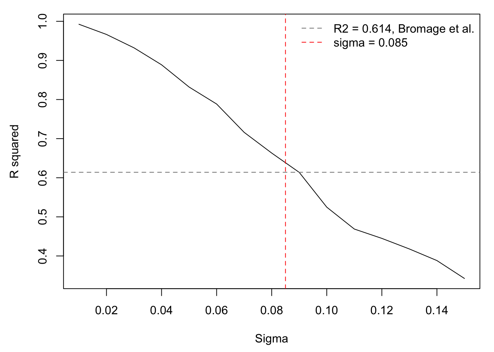
Now show the relationship with random noise.
expand_grid(
weight_g = seq(300, 2000, by = 5),
sigma = c(0.085)
) |>
# Replicate each combo a few times to show scatter
slice(rep(1:n(), each = 5)) |>
rowwise() |>
mutate(eggs = fncFecundBromage(weight_g, sigma = sigma)) |>
ungroup() |>
ggplot(aes(x = weight_g, y = eggs)) +
geom_point(alpha = 0.15, size = 0.8) +
geom_line(
data = tibble(weight_g = seq(300, 2000, by = 1),
eggs = fncFecundBromage(weights = seq(300, 2000, by = 1), sigma = 0)),
color = "firebrick2", linewidth = 0.8
) +
facet_wrap(~ paste0("sigma = ", sigma)) +
theme_bw() + theme(panel.grid = element_blank()) +
xlab("Weight (g)") + ylab("Fecundity (number of eggs)") +
labs(title = "Weight-fecundity relationships with log-scale noise (red = deterministic mean)")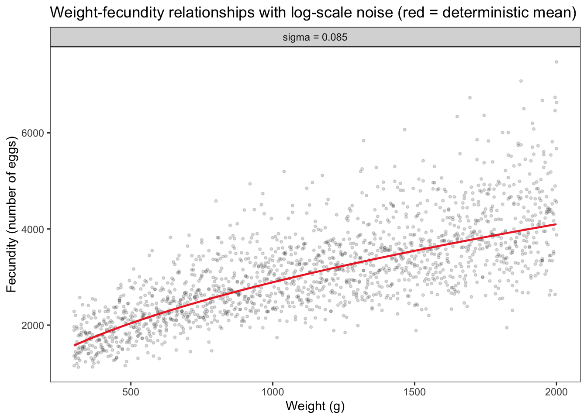
Tune survival. Tune the egg-to-fry survival parameter to better match empirical reproductive success data. E.g., see Baldock et al. (2023, Oikos). For redds that were not superimposed, we found no relationship between maternal parent size and reproductive success, but sample size and the range of fish size are extremely limited.
oikos_tib <- tibble(momlen = c(381,441,390,344,442,385,415,361,335,NA,396,400),
cohort = c(106,55,119,86,159,49,76,164,224,29,288,132))
p1 <- oikos_tib %>%
ggplot(aes(x = momlen, y = cohort)) +
geom_point() + geom_smooth(method = "lm") +
xlab("Maternal parent length (mm)") + ylab("Reproductive success (number of offspring") +
theme_bw() + theme(panel.grid = element_blank()) + ylim(0,300)
p2 <- oikos_tib %>%
ggplot(aes(y = cohort)) +
geom_boxplot(fill = "grey90") +
xlab("") + ylab("") +
theme_bw() + theme(panel.grid = element_blank(),
axis.title.x = element_blank(), axis.title.y = element_blank(),
axis.text.x = element_blank(), axis.text.y = element_blank(),
axis.ticks.x = element_blank()) +
ylim(0,300)
ggarrange(p1, p2, nrow = 1)
Show the the weight-fecundity relation ship with varying values for survival compares to the distribution of reproductive success values from Baldock et al. (2023).
expand_grid(
weight_g = seq(300, 2000, by = 5),
survival = seq(0.1, 1, by = 0.1)
) |>
mutate(eggs = fncFecundBromage(weight_g, survival = survival)) %>%
ggplot() +
geom_rect(aes(xmin = -Inf, xmax = Inf,
ymin = quantile(oikos_tib$cohort, probs = 0.025),
ymax = quantile(oikos_tib$cohort, probs = 0.975)),
fill = "grey90", inherit.aes = FALSE) +
geom_rect(aes(xmin = -Inf, xmax = Inf,
ymin = quantile(oikos_tib$cohort, probs = 0.25),
ymax = quantile(oikos_tib$cohort, probs = 0.75)),
fill = "grey70", inherit.aes = FALSE) +
geom_abline(intercept = quantile(oikos_tib$cohort, probs = 0.5), slope = 0, linetype = "dashed") +
geom_line(aes(x = weight_g, y = eggs, group = survival, color = survival)) +
scale_color_viridis_c() +
theme_bw() + theme(panel.grid = element_blank()) +
xlab("Weight (g)") + ylab("Fecundity (number of eggs)")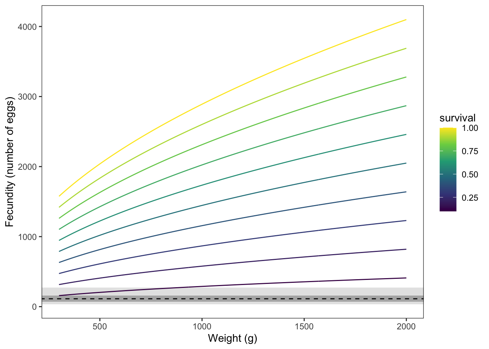
The plot above suggests that egg-to-fry survival rates are extremely low (<0.1), but note different species (RBT vs. YCT). Also, this “survival” parameter encapsulates many different processes, including egg retention, fertilization rate, and direct mortality due to sedimentation, scour, disease, scour, low/high temperature, desiccation, and superimposition. Literature on egg-to-fry survival rates (or similar) is incredibly varied:
Seems like the best approach will be to tune this parameter according to emergent properties of the simulated population. We should consider experiments that altering this parameter to explicitly account for differences in habitat or reproductive success among habitats or through time. E.g., an “invest in X habitat” scenario could have a higher egg-to-fry survival rate representing spawning gravel enhancement projects.
Spawners incur a weight loss that represents the energetic cost of spawning: principally, the mass allocated to egg production. See page 127 of Railsback et al. (2023, USDA).
Explore the energetic cost of reproduction for different body sizes and egg weights, given the weight-fecundity relationship specified above (Bromage et al. 1990).
mydf <- expand_grid(
weight_g = seq(300, 2000, by = 5),
egg_wt = seq(0.05, 0.09, by = 0.01)
) |>
# Replicate each combo a few times to show scatter
mutate(eggs = fncFecundBromage(weight_g, sigma = 0),
mass_loss = eggs * egg_wt,
rel_mass_loss = mass_loss / weight_g,
egg_wt_lab = paste("Egg wt. = ", egg_wt, " g", sep = ""))
p1 <- mydf %>% ggplot() +
geom_line(aes(x = weight_g, y = mass_loss)) +
facet_wrap(~egg_wt_lab, nrow = 1) +
theme_bw() + xlab("Spawner weight (g)") + ylab("Total mass loss (g)")
p2 <- mydf %>% ggplot() +
geom_line(aes(x = weight_g, y = rel_mass_loss)) +
facet_wrap(~egg_wt_lab, nrow = 1) +
geom_abline(intercept = 0.18, slope = 0, color = "red", linetype = "dashed") +
theme_bw() + xlab("Spawner weight (g)") + ylab("Proportional mass loss")
egg::ggarrange(p1 + theme(axis.title.x = element_blank()),
p2,
nrow = 2, top = "Energetic cost of reproduction")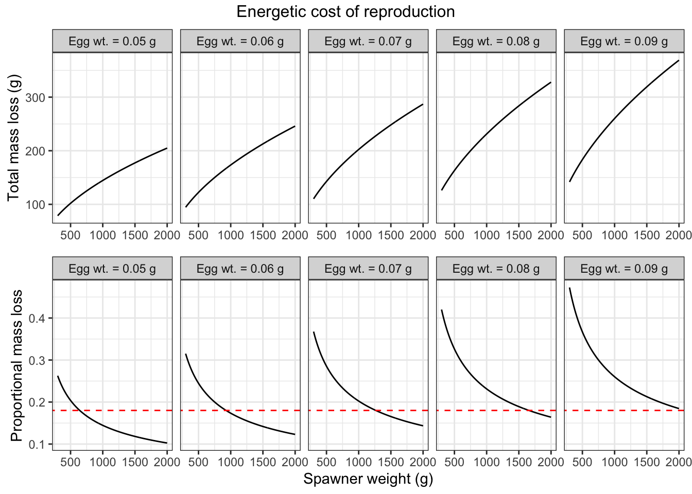
The relationships above indicate declining investment in reproduction with increasing body size. But in addition to producing more eggs, larger females also produce larger eggs with greater energy content (Barneche et al. 2018, Science). Also see Bromage et al. (1990), Hutchings et al. (1994), McCann and Shuter (1997), Aparicio et al (2023), and others. This would seem suggest that older, larger fish invest proportionally more energy reserves to reproduction, the opposite of the relationships shown on the bottom row (or perhaps a flat relationship???).
Railsback et al. (2023) assumes that a fixed proportion of mass is lost to reproduction: 20% following Hayes et al. (2000) and Liens (1978). Perhaps this is a reasonable approach for now (fixed mass loss), as it strikes a reasonable balance between the strongly negative relationships shown above and the likely positive (but uncertain) relationship proposed by Barneche et al. However, it could be very interesting to incorporate the positive effects of female mass on egg size and energy density (which could be represented by a positive effect of parent mass on offspring starting weight).
tibble(mass = seq(300, 2000, by = 5)) %>%
mutate(eggs = 2.93 * (mass^1.18)) %>%
ggplot() + geom_line(aes(x = mass, y = eggs))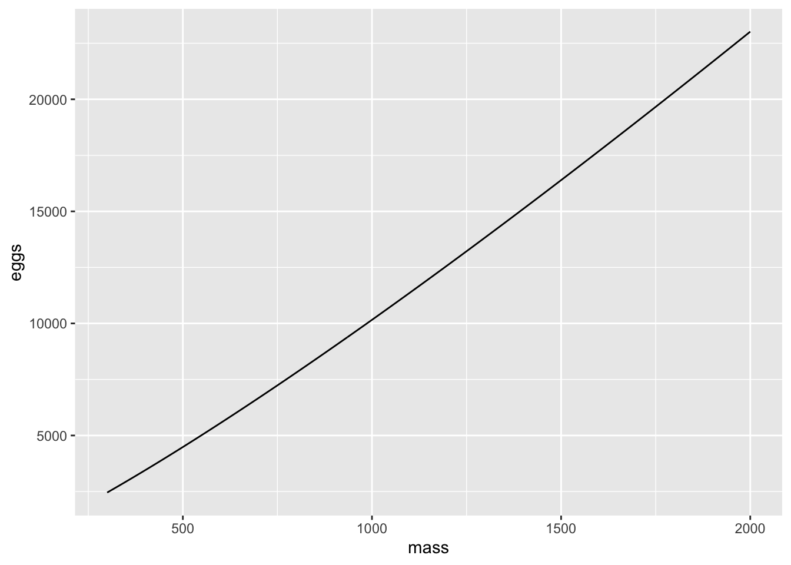
tibble(mass = seq(300, 2000, by = 5)) %>%
mutate(eggvolume = 0.15 * (mass^0.14)) %>%
ggplot() + geom_line(aes(x = mass, y = eggvolume))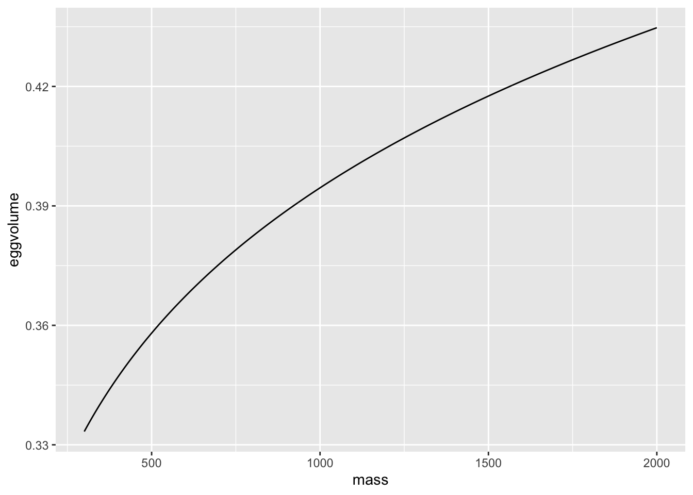
tibble(eggvolume = seq(0.3, 0.5, by = 0.01)) %>%
mutate(energydensity = 2.15 * (eggvolume^0.77)) %>%
ggplot() + geom_line(aes(x = eggvolume, y = energydensity))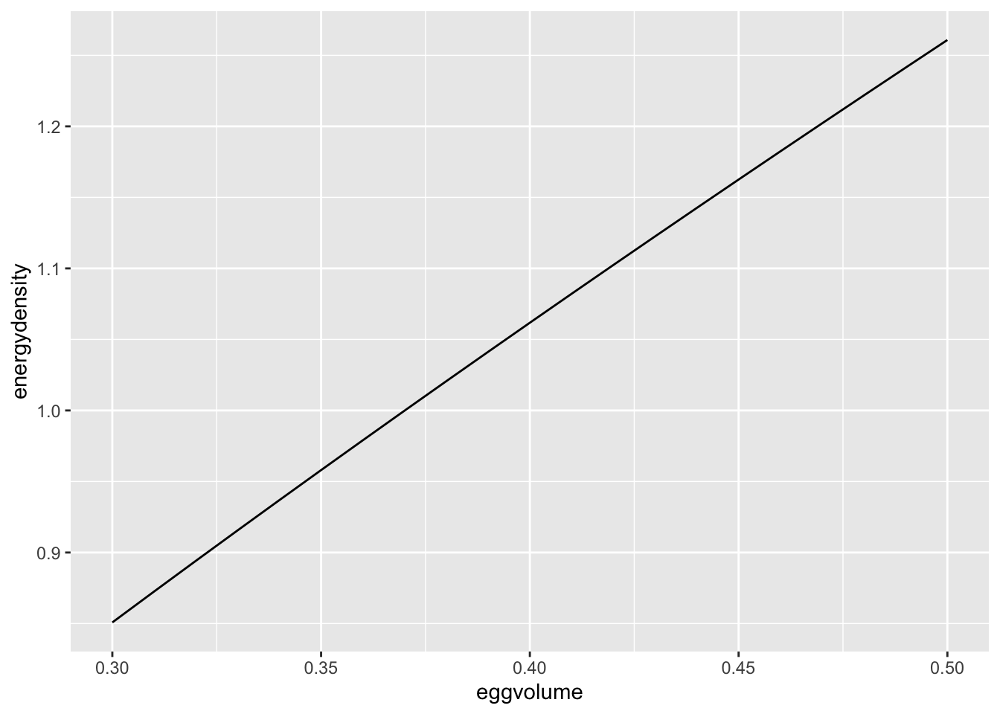
Maturity (i.e., readiness to spawn) is a function of size (fish need to reach a minimum size), condition (only fish in reasonably good condition can spawn), and date (fish can only spawn within a given period), following the general framework of Railsback et al. (2023, InSTREAM7 user manual).
Probability of maturity is a logistic function of size. Onset of maturity is anchored to 300 g, the ~minimum weight of mature RBT inferred from Figure 2 of Bromage et al. (1990).
fncMaturitySize <- function(weight, K1 = 300, K9 = 500, w_min = 200) {
# weight: numeric vector of fish weights
# K1: weight at which daily probability of maturity = 0.1 (onset of maturity)
# K9: weight at which daily probability of maturity = 0.9 (totally ready)
# w_min: minimum weight considered (below this, probability is 0)
# Returns a probability vector; multiply with other survival probabilities before sampling.
K50 <- (K1 + K9) / 2
k <- 2 * log(9) / (K9 - K1)
p <- 1 / (1 + exp(-k * (weight - K50)))
p[weight < w_min] <- 0
p
}Show daily probability of maturation as a function of size
data.frame(weight = seq(100, 1000, by = 10)) |>
dplyr::mutate(p_mature = fncMaturitySize(weight)) |>
ggplot(aes(x = weight, y = p_mature)) +
geom_line() +
geom_point(data = data.frame(weight = c(500, 300), p_mature = c(0.9, 0.1)),
size = 3, shape = 21, fill = "white") +
geom_hline(yintercept = c(0.1, 0.9), linetype = "dashed", alpha = 0.4) +
geom_vline(xintercept = c(300, 500), linetype = "dashed", alpha = 0.4) +
theme_bw() + theme(panel.grid = element_blank()) +
xlab("Weight (g)") + ylab("Daily maturation probability") +
labs(title = "Size-based daily maturity",
subtitle = "Anchor points: P = 0.1 at K = 300, P = 0.9 at K = 500")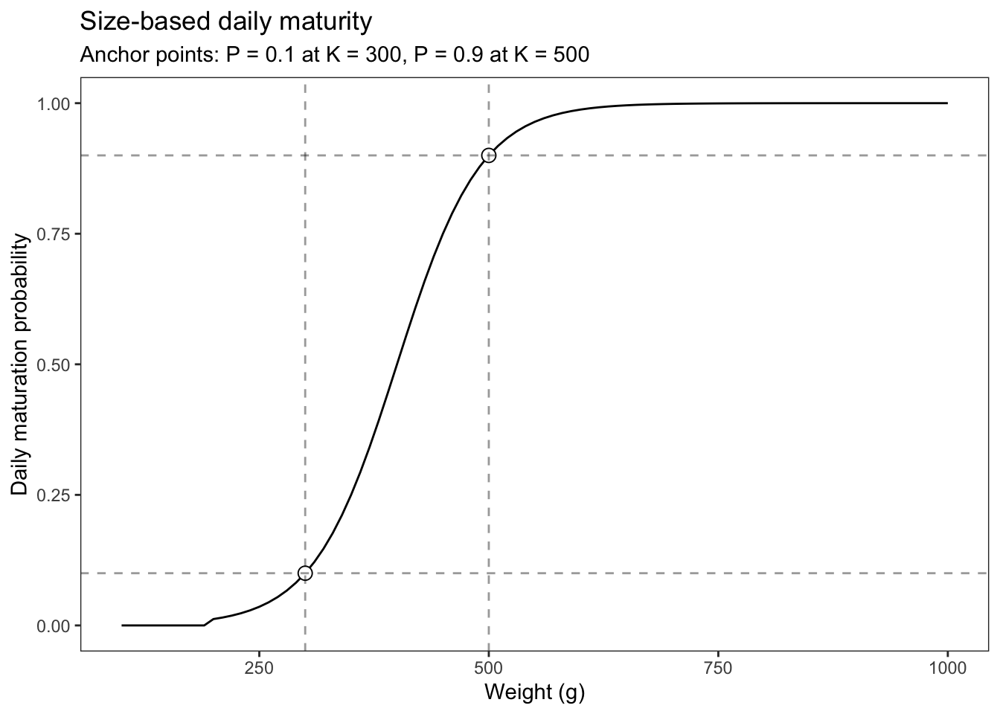
Visualize the cumulative probability of spawning over a given period of time, for fish of different sizes
# Fish sizes to show and time horizon
sizes <- seq(100, 600, by = 100)
days <- 1:30
# For each size, daily p is fixed; cumulative prob of having spawned by day t
expand_grid(weight = sizes, day = days) |>
mutate(
p_daily = fncMaturitySize(weight),
p_cum = 1 - (1 - p_daily)^day,
weight = factor(paste0(weight, " g"), levels = paste0(sizes, " g"))
) |>
ggplot(aes(x = day, y = p_cum, colour = weight)) +
geom_line(linewidth = 0.8) +
scale_colour_viridis_d(option = "plasma", end = 0.9, name = "Weight") +
theme_bw() + theme(panel.grid = element_blank()) +
labs(
x = "Day",
y = "Cumulative probability of spawning",
title = "Cumulative probability of spawning over time by fish size"
)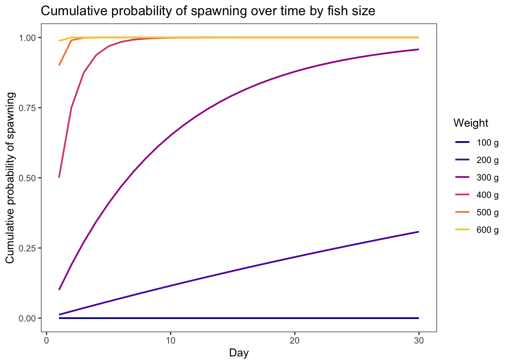
The plot shows the contrasting dynamics clearly — at 500–600 g a fish has a near-certain chance of spawning within just a few days, while at 100 g the cumulative probability barely reaches ~4% over a full month (because the daily probability is ~0.001).
Probability of maturity is a logistic function of condition: only fish in reasonably good condition are allowed to spawn. Onset of maturity is anchored to condition = 0.7. Minimum condition values coming out of winter (from previous simulation runs) dip down to ~0.7, we want to make sure fish in this poor energetic state are not allowed to spawn until condition improves.
fncMaturityCondition <- function(condition, K1 = 0.7, K9 = 0.9, c_min = 0.6) {
# condition: numeric vector of relative condition values (current_weight / peak_weight)
# K1: condition at which daily maturity probability = 0.1 (onset of spawning)
# K9: condition at which daily maturity probability = 0.9 (spawning is almost guaranteed)
# c_min: minimum condition below which probability is exactly 0 (biologically implausible to spawn)
# Returns a probability vector; multiply with other survival probabilities before sampling.
K50 <- (K1 + K9) / 2
k <- 2 * log(9) / (K9 - K1) # note: sign flipped vs. temperature — survival rises with condition
p <- 1 / (1 + exp(-k * (condition - K50)))
p[condition < c_min] <- 0
p
}Show daily probability of maturation as a function of condition
data.frame(condition = seq(0, 1, by = 0.01)) |>
dplyr::mutate(p_mature = fncMaturityCondition(condition)) |>
ggplot(aes(x = condition, y = p_mature)) +
geom_line() +
geom_point(data = data.frame(condition = c(0.7, 0.9), p_mature = c(0.1, 0.9)),
size = 3, shape = 21, fill = "white") +
geom_hline(yintercept = c(0.1, 0.9), linetype = "dashed", alpha = 0.4) +
geom_vline(xintercept = c(0.7, 0.9), linetype = "dashed", alpha = 0.4) +
theme_bw() + theme(panel.grid = element_blank()) +
xlab("Relative condition (current weight / peak weight)") + ylab("Daily maturation probability") +
labs(title = "Condition-based daily maturity",
subtitle = "Anchor points: P = 0.1 at K = 0.7, P = 0.9 at K = 0.9")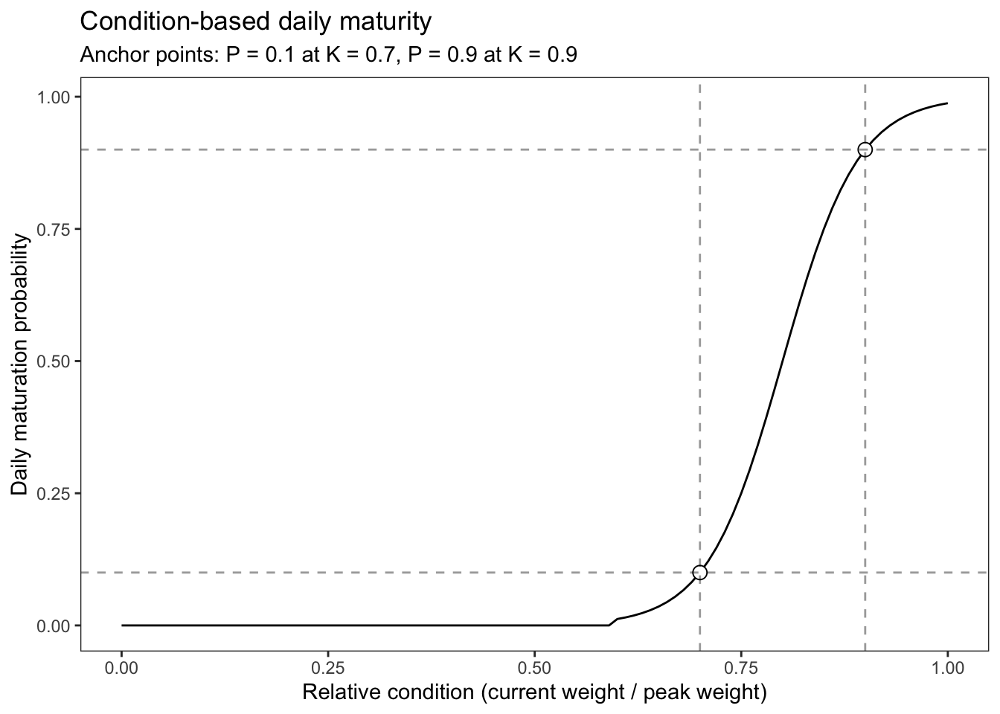
Visualize the cumulative probability of spawning over a given period of time, for fish of different conditions
# Fish sizes to show and time horizon
conditions <- seq(0.5, 1, by = 0.1)
days <- 1:30
# For each size, daily p is fixed; cumulative prob of having spawned by day t
expand_grid(condition = conditions, day = days) |>
mutate(
p_daily = fncMaturityCondition(condition),
p_cum = 1 - (1 - p_daily)^day,
condition = factor(condition)
) |>
ggplot(aes(x = day, y = p_cum, colour = condition)) +
geom_line(linewidth = 0.8) +
scale_colour_viridis_d(option = "plasma", end = 0.9, name = "Condition") +
theme_bw() + theme(panel.grid = element_blank()) +
labs(
x = "Day",
y = "Cumulative probability of spawning",
title = "Cumulative probability of spawning over time by fish condition"
)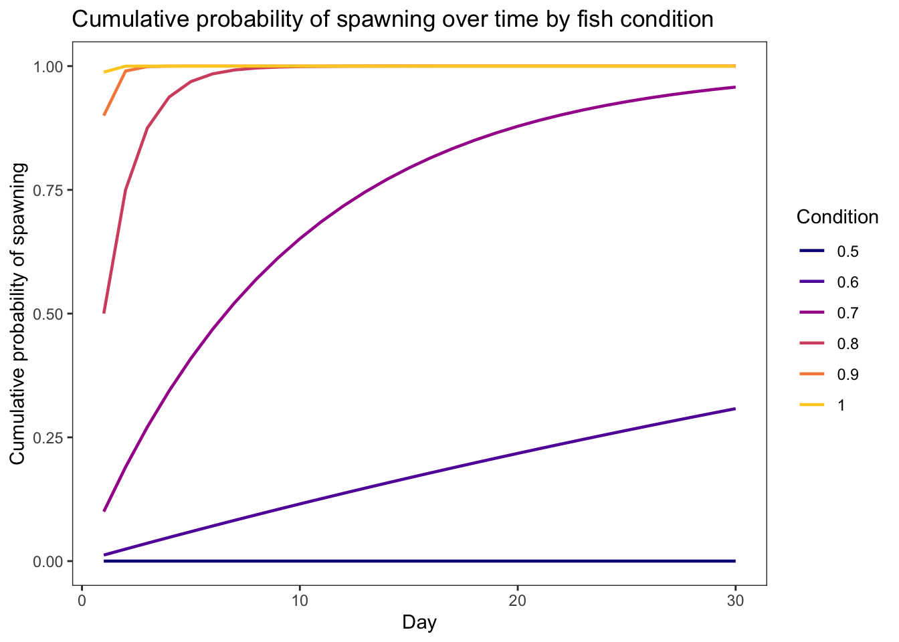
At conditions exceeding 0.7, a fish has a near-certain chance of spawning within just a few days, but at <0.6 the cumulative probability is <25% even after full month.
Probability of maturity is a function of time/day of year. This follows a normal distribution, where probability peaks at some date (peak_doy), the drops off on either side (earlier and later). Note that we reproduction/recruitment is instantaneous; i.e., we assume that offspring are produced as free-swimming fish on the day of spawning…so really this represents day of emergence.
peak_doy: the day of maximum spawning probability (defaults to day 121 ≈ May 1, which is reasonable for emergence timing rainbow trout).duration: the approximate length of the spawning season in days, defined as ±2 SD from the peak — so it spans ~95% of the probability mass. sigma = duration / 4.p_max: ceiling on daily probability at the peak. Defaults to 1, making this a pure shape multiplier that can be combined with the size and condition functions (e.g. p_size * p_condition * p_date).fncMaturityDate <- function(doy, peak_doy = 121, duration = 15, p_max = 1) {
# doy: numeric vector of day-of-year values (1–365)
# peak_doy: day of year at which daily spawning probability is highest
# duration: approximate spawning season width in days; defined as the span
# covering ~95% of the probability mass (i.e., ±2 SD from peak),
# so sigma = duration / 4
# p_max: maximum daily spawning probability, reached at peak_doy
# Returns a probability vector scaled to [0, p_max]
sigma <- duration / 4
p_max * exp(-0.5 * ((doy - peak_doy) / sigma)^2)
}Show daily probability of maturation as a function of day of year and duration of spawning
# --- Visualise: vary duration, fix peak ---
expand_grid(
doy = 50:150,
duration = c(5, 10, 20, 40)
) |>
mutate(
p = fncMaturityDate(doy, peak_doy = 90, duration = duration),
duration = factor(paste0(duration, " days"), levels = paste0(c(5, 10, 20, 40), " days"))
) |>
ggplot(aes(x = doy, y = p, colour = duration)) +
geom_line(linewidth = 0.8) +
scale_x_continuous(
breaks = c(1, 32, 60, 91, 121, 152, 182, 213, 244, 274, 305, 335),
labels = month.abb
) +
scale_colour_viridis_d(option = "plasma", end = 0.85, name = "Duration") +
theme_bw() + theme(panel.grid = element_blank()) +
labs(
x = "Day of year",
y = "Daily spawning probability",
title = "Date-based daily spawning (reproduction/emergence) probability",
subtitle = "Peak day = May 1 (day 121); p_max = 1"
)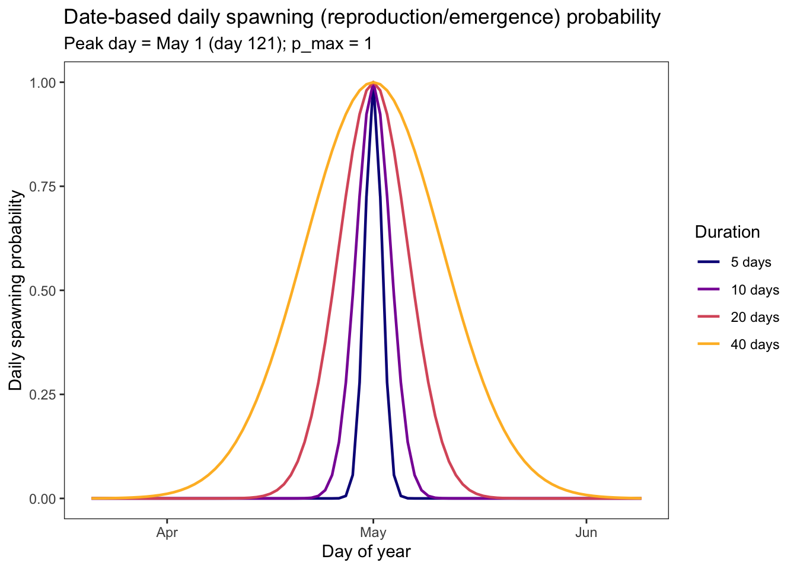
Visualize the combined daily spawning probability (size × condition × date) to see how the three components interact.
# --- Panel A: heatmap of p_combined over doy × weight, condition fixed at 0.85
p_heat <- expand_grid(
doy = 1:200,
weight = seq(100, 600, by = 5)
) |>
mutate(
p_date = fncMaturityDate(doy, peak_doy = 90, duration = 60),
p_size = fncMaturitySize(weight),
p_cond = fncMaturityCondition(0.85),
p_comb = p_date * p_size * p_cond
) |>
ggplot(aes(x = doy, y = weight, fill = p_comb)) +
geom_tile() +
scale_fill_viridis_c(option = "plasma", name = "P(spawn)", limits = c(0, 1)) +
scale_x_continuous(
breaks = c(1, 32, 60, 91, 121, 152),
labels = month.abb[1:6],
expand = c(0, 0)
) +
scale_y_continuous(expand = c(0, 0)) +
theme_bw() + theme(panel.grid = element_blank()) +
labs(x = "Day of year", y = "Weight (g)",
title = "A: Size × Date (condition = 0.85, fixed)")
# --- Panel B: lines over doy for different conditions, weight fixed at 400g
p_cond_lines <- expand_grid(
doy = 1:200,
condition = c(0.70, 0.80, 0.85, 0.90, 1.00)
) |>
mutate(
p_date = fncMaturityDate(doy, peak_doy = 90, duration = 60),
p_size = fncMaturitySize(400),
p_cond = fncMaturityCondition(condition),
p_comb = p_date * p_size * p_cond,
condition = factor(condition)
) |>
ggplot(aes(x = doy, y = p_comb, colour = condition)) +
geom_line(linewidth = 0.8) +
scale_colour_viridis_d(option = "mako", end = 0.85, name = "Condition") +
scale_x_continuous(
breaks = c(1, 32, 60, 91, 121, 152, 182),
labels = month.abb[1:7]
) +
theme_bw() + theme(panel.grid = element_blank()) +
labs(x = "Day of year", y = "P(spawn)",
title = "B: Condition × Date (weight = 400 g, fixed)")
p_heat / p_cond_lines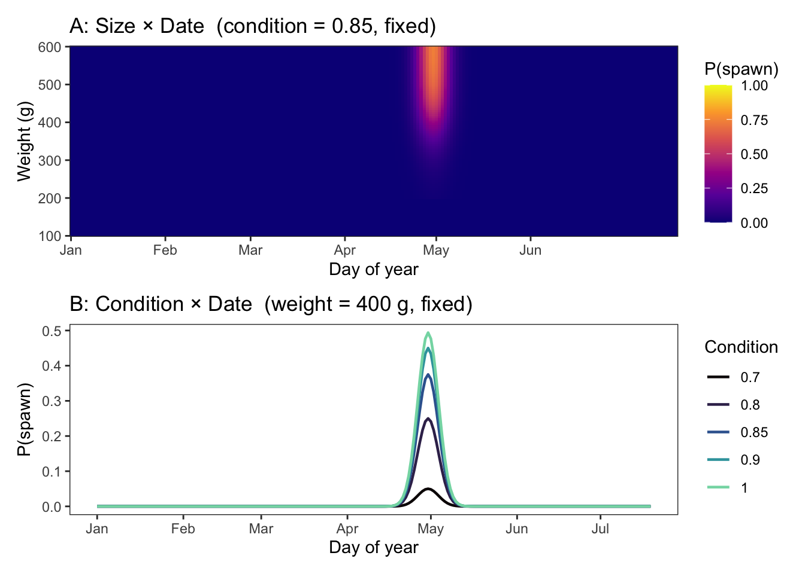
Panel A (size × date): The size gate is the dominant bottleneck for small fish — even at the peak spawning date, fish below ~300 g have essentially zero probability. The “hot spot” (yellow) requires both the right time of year and sufficient size. Above ~500 g, the size gate is nearly fully open and the date window becomes the controlling factor.
Panel B (condition × date): At 400 g (a mid-range fish), condition strongly scales the peak but doesn’t shift the timing. A fish at condition 0.7 (poor, coming out of winter) has its peak probability suppressed to ~5% even at the optimal date, while a fish at condition 1.0 reaches ~50%. This means poor-condition fish are effectively excluded from spawning even if they’re the right size and time of year.
For sourcing later
#quarto::qmd_to_r_script("Functions.qmd")